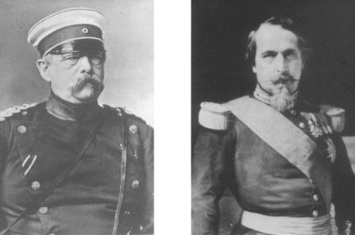

Otto von Bismarck III. Napoleon
Kırım Savaşı sonucunda Metternich sisteminin çökmesi, karışıklıklarla dolu bir yirmi yıla neden oldu: 1859’da Fransa ve Piyemonte’nin Avusturya’ya karşı savaşı, 1864’te Schleswig-Holstein üzerindeki savaş, 1866’da Avusturya-Prusya Savaşı ve 1870’te Fransa-Prusya Savaşı. Bu karışıklıklardan Avrupa’da yeni bir güç dengesi doğdu. Savaşlardan üçüne katılan ve diğerlerini de teşvik eden Fransa, Almanya üzerindeki üstünlüğünü yitirdi. Daha da önemlisi, Metternich sisteminin moral kısıtlamaları ortadan kalktı. Bu isyan, kısıtlanmamış güç dengesi politikası için kullanılan yeni terimde simgesini bulmaktadır: Almanca bir kelime olan Realpolitik, anlamı değiştirilmeden Fransızların raison d’état teriminin yerini aldı.
Yeni Avrupa düzeni, birbirine hiç benzemeyen ve sonradan birbirinin can düşmanı olan iki kişinin işbirliğinin eseridir: imparator III. Napoleon ve Otto von Bismarck. Bu iki adam, Metternich’in eski kurallarını görmezlikten geldiler. Bu kurallara göre, istikrarın sağlanması için Avrupa devletlerinin meşru taçlı başları korunacak, ulusal ve liberal hareketler bastırılacak ve hepsinden önemlisi, devletler arasındaki ilişkiler aynı kafa yapısına sahip olan yöneticiler arasında bir konsensüs ile yürütülecekti. Napoleon ve Bismarck, politikalarını devletler arasındaki ilişkilerin kaba kuvvetle çözülmesi ve kuvvetlinin galip gelmesi anlamına gelen Realpolitik’e dayandırdılar.
Avrupa’yı kasıp kavuran büyük Bonaparte’nin yeğeni olan III. Napoleon, gençliğinde, Avusturya’nın İtalya’daki hegemonyasına karşı savaşan gizli İtalyan derneklerinin üyesi idi. 1848’de Cumhurbaşkanı seçilen Napoleon, bir hükümet darbesi sonucunda, 1852’de kendisini imparator ilan etti. Otto von Bismarck ise, önemli bir Prusyalı ailenin oğlu ve 1848’de Prusya’daki Liberal Devrim’in ateşli bir karşıtı idi. Kralın parçalanmış Parlemento’da askeri ödenekleri geçirmek konusunda oluşan kilitlenmeyi aşmak için başka çözüm bulamaması sonucunda, 1862’de istemeye istemeye Bismarck’ı Ministerpräsident (Başbakan) seçti.
III. Napoleon ve Bismarck, kendi aralarında Viyana düzenlemesini ve en önemlisi, muhafazakâr değerlere olan ortak inançtan doğan kendi kendini kontrol etme duygusunu ortadan kaldırmayı başardılar. III. Napoleon ve Bismarck kadar birbirinin karşıtı olan başka iki kişi tasavvur edilemez. Demir Şansölye ile Tuileries Sarayı’nın Sfenksi, Viyana sistemine karşı duydukları nefrette birleşmişlerdi. Her ikisi de 1815’te Metternich tarafından Viyana’da kurulan düzeni, kendi yapmak istedikleri şeylerin önünde bir engel olarak görüyorlardı. III. Napoleon’un Viyana sisteminden nefret etmesinin nedeni, bu sistemin açıkça Fransa’yı sınırlamak için yaratılmış olmasıydı. Her ne kadar III. Napoleon’un, amcası gibi megaloman ihtirasları yoksa da, bu anlaşılması güç lider, Fransa’nın ara sıra toprak genişlemesi yapmaya hakkı olduğuna inanıyor ve yolunun üzerinde birleşmiş bir Avrupa’yı görmek istemiyordu. Bundan başka, milliyetçilik ve liberalizm değerlerinin, tüm dünyada, Fransa ile bir tutulan değerler olduğunu düşünüyordu ve bu değerleri baskı altında tutan Viyana sisteminin ihtiraslarına gem vurduğunu düşünüyordu. Bismarck da Metternich’in eserinden hoşlanmıyordu; çünkü Prusya’yı, Alman Federasyonu’nda, Avusturya’nın küçük ortağı durumuna hapsetmişti ve Bismarck, konfederasyonun birçok küçük Alman hükümdarını koruyarak, Prusya’nın elini kolunu bağladığına inanıyordu. Eğer Prusya alın yazısını gerçekleştirecek ve Almanya’yı birleştirecekse, Viyana sisteminin ortadan kaldırılması gerekiyordu.
Kurulu düzeni hor görmede ortak düşünceleri olan iki devrimci, başarılarını gerçekleştirirken zıt kutuplarda yer aldılar. Napoleon, yapmak için yola çıktığı şeyin tam tersini yaptı. Kendisini, Viyana düzenlemesini ortadan kaldıran ve Avrupa milliyetçiliğinin esin kaynağı olarak gören Napoleon, Avrupa diplomasisini, uzun vadede Fransa’nın hiçbir şey kazanamadığı ve diğer devletlerin kârlı çıktığı büyük bir karışıklığın içine attı. Napoleon, İtalya’nın birleşmesini mümkün hale getirdi ve istemeyerek de olsa Almanya’nın birleşmesine yardım etti ki, bu iki olay, Fransa’nın jeopolitik durumunu zayıflattı ve Orta Avrupa’da egemen Fransız etkisinin tarihi tabanını ortadan kaldırdı. Bu olaylara engel olmak, Fransa’nın olanaklarının ötesinde olabilirdi. Ancak Fransa’nın hatalı politikası, bir taraftan kendi uzun vadeli çıkarlarına uygun yeni bir uluslararası düzen şekillendirme olanağının kaybolmasına neden olurken, diğer taraftan da süreci hızlandırdı. Napoleon Viyana sistemini, bu düzenlemenin Fransa’yı yalnız bıraktığını düşündüğü için yıkmaya çalıştı ki bu bir dereceye kadar doğruydu; ancak Napoleon yönetimi 1870’te sona erdiğinde, Fransa, Metternich zamanındakinden daha da çok yalnız kalmıştı.
Bismarck’ın mirası ise, bunun tamamen tersiydi. Dünyada çok az devlet adamı tarihin akışını Bismarck kadar değiştirebilmiştir. Bismarck yönetime gelmeden önce, Alman birliğinin, 1848 devriminin sebebi olan anayasal parlamenter hükümet ile parlamento tarafından gerçekleştirilmesi bekleniyordu. Beş yıl sonra Bismarck, üç kuşak boyunca Almanları meşgul eden Almanya’nın birleşmesi sorununu çözüme bağlama yolunda büyük mesafe almıştı; ancak bunu demokratik anayasal süreç yoluyla değil, Prusya’nın gücünün üstünlüğü temeline dayanarak yapmıştı. Bismarck’ın çözüm şekli, Almanya’da herhangi bir önemli seçim bölgesi tarafından savunulmamıştı. Muhafazakârlar için çok demokratik, liberaller için çok otoriter, hukuktan yana olanlar için çok kuvvet-merkezli olan yeni Almanya, serbest bıraktığı iç-dış güçleri, onların kendi aralarındaki düşmanlıkları kullanarak yönlendiren bir dâhiye göre biçilmişti; ancak onun ustası olduğu bu görev, yerine gelenlerin yeteneklerinin çok üzerindeydi.
Hayatta iken III. Napoleon’a “Tuileries’nin Sfenksi” denirdi. Bunun nedeni, onun, adım adım ortaya çıkana kadar, hiç kimsenin anlayamayacağı nitelikte, büyük ve parlak planlar hazırladığına inanılmasıydı. Fransa’nın Viyana sisteminin neden olduğu diplomatik yalnızlığına son verdiği ve Kırım Savaşı yoluyla Kutsal İttifak’ın dağılmasını başlattığı için kavranması güç derecede zeki bir insan sayılırdı. Yalnızca bir Avrupa lideri, Otto von Bismarck, başlangıçtan beri onun içini okumuştu. 1850’lerde Napoleon’u alaycı bir şekilde tanımlamıştı: “Duygusallığına karşın, zekâsına fazla önem verilmiştir.”
Amcası gibi, III. Napoleon da meşru asalet unvanlarına sahip olmamasına aklını takmıştı. Her ne kadar kendisini bir devrimci olarak değerlendiriyorsa da, Avrupa’nın meşru kralları tarafından kabul edilmeyi de çok istiyordu. Kuşkusuz, eğer Kutsal ittifak, hâlâ ilk inançlarına bağlı olsaydı, 1848’de Fransız krallık yönetiminin yerine geçen cumhuriyet kurumlarını devirmeye çalışırdı. Fransız Devrimi’nin kanlı aşırılıkları henüz hatırlardaydı; ama Fransa’ya yapılan dış müdahalenin 1792’de Fransız devrim ordularının Avrupa ulusları üzerine salınmasına yol açtığı da unutulmamıştı. Benzer bir dış müdahale korkusu, aynı zamanda cumhuriyetçi Fransa’yı da devrim ihraç etmeye zorladı. Hareket edemez duruma düşen muhafazakâr devletler, istemeyerek de olsa, önce şair ve sonra devlet adamı Alphonse de Lamartine, sonra seçimle başkan olan Napoleon ve en sonra başkan olarak yeniden seçilmesini önleyen anayasa kuralını, Aralık ayında ortadan kaldıran bir hükümet darbesinden sonra imparator olarak “III.” Napoleon tarafından yönetilen Fransa’yı tanımaya razı oldular.
III. Napoleon ikinci imparatorluğu ilan eder etmez, tanıma sorunu tekrar ortaya çıktı. Bu kez, Napoleon’u imparator olarak tanıyıp tanımama söz konusu idi; çünkü Viyana Antlaşması özel olarak Napoleon ailesine Fransız tahtını yasaklamıştı. Değiştirilemeyecek bir şeyi ilk kabul eden Avusturya oldu. Avusturya’nın Paris Büyükelçisi Baron Hübner, Şefi Prens Schwarzenberg’in 31 Aralık 1851’deki Metternich devrinin artık sona erdiğini vurgulayan karakteristik alaycı bir sözünü tekrarladı: “Prensipler dönemi, artık geçmişte kalmıştır.”{121}
Napoleon’un tanınmadan sonraki en büyük derdi, diğer kralların kendisini, birbirlerine karşı kullandıktan hitap tarzı olan “kardeşim” şeklinde mi çağıracakları, yoksa daha düşük bir hitap tarzı mı kullanacakları konusuydu. Sonunda, Avusturya ve Prusya hükümdarları Napoleon’un tercihini kabullendiler; fakat Çar I. Nikola Napoleon’a “dost” deyiminden daha samimi bir deyimle hitap etmeyi reddederek tutumunu değiştirmedi. Çar’ın devrimciler hakkında ne düşündüğü bilindiğine göre, kendisi, Napoleon’u hak ettiğinden fazla ödüllendirdiği inancındaydı. Hübner, Tuileries Sarayı’ndaki incinmiş duyguları şöyle kaydediyor:
“İnsan, eski Avrupa sarayları tarafından küçümsenmiş olduğu hissine kapılıyor, imparator Napoleon’un kalbini kemiren kurt budur.”{122}
Bu küçük görme, ister gerçek, ister hayali olsun, Napoleon’un Avrupa diplomasisine karşı yaptığı pervasız ve amansız saldırıların kökenindeki psikolojik nedenlerden birisidir. Bu durum, Napoleon ile Avrupa kralları arasındaki uçurumu göstermekte idi.
Napoleon’un hayatındaki çelişki, cesaretinin ve iç sezgisinin yetersiz olduğu dış maceralardan çok, kendisinin canını sıkan iç politikaya daha yatkın olmasıydı. Napoleon, kendi kendine verdiği devrimci misyonundan vakit buldukça, Fransa’nın gelişmesine önemli katkılarda bulundu. Fransa’ya Sanayi Devrimi’ni getiren odur. Büyük kredi kurumlarını teşvik etmesi, Fransa’nın ekonomik kalkınmasında önemli rol oynadı. Paris’i, bugünkü görkemli görünüşüne kavuşturan da odur. XIX. yüzyılın başlarında Paris, hâlâ dar ve kıvrım kıvrım sokakları ile bir Ortaçağ şehri idi. Napoleon yakın danışmanı Baron Haussmann’a, geniş bulvarları, büyük devlet binaları, büyük ve güzel görünüşü ile modern bir şehir yaratmak için gerekli yetki ve mali olanağı sağladı. Geniş bulvarların yapılmasından amaç, ihtilalcilerin cesaretini kırmak için kolluk kuvvetlerine açık ateş açısı sağlamak ise de, bu amaç yapılan işlerin ihtişamını ve kalıcılığını azaltmamaktadır.
Dış politika Napoleon’un tutkusuydu ve bu işte, kendisini birbiriyle çelişen duygular arasında parçalanmış buldu. Meşruiyetini sağlama amacını hiçbir zaman gerçekleştiremeyeceğini anlamıştı; çünkü bir hükümdarın meşruiyeti, görüşmelerle elde edilemeyecek, doğuştan gelen bir haktı. Diğer taraftan, tarihe meşruiyet peşinde koşan birisi olarak geçmek de istemiyordu. O bir İtalyan Carbonari (bağımsızlık savaşçısı) olmuştu ve kendisini, ulusal self-determinasyon hakkının savunucusu olarak kabul ediyordu. Aynı zamanda üzerine büyük risk almaktan da çekiniyordu. Napoleon’un son hedefi, Viyana düzenlemesinin toprak düzenlemesi ile ilgili hükümlerini kaldırtmak ve bu düzenlemenin dayandığı devlet sistemini değiştirmekti. Fakat hedefine varmanın, aynı zamanda Fransa’nın Orta Avrupa’yı hegemonyası altına alma ümitlerini ebediyen sona erdirecek olan Almanya’nın birleşmesiyle sonuçlanacağını anlayamadı.
Politikasının kararsızlığı, kendi kişisel duygularının bir yansımasıydı. “Kardeş” krallara güvenmeyen Napoleon, kamuoyuna dayanmayı yeğledi ve politikası, popülerliğini istenen düzeyde tutmak için neyin gerekli olduğuna paralel olarak dalgalandı. 1857’de, her yerde hazır ve nazır Baron Hübner, Avusturya İmparatoru’na şunları yazıyordu:
“O’nun (Napoleon’un) gözünde dış politika, Fransa’daki yönetimini güvence altına almak, tahtını meşru hale getirmek ve hanedanını kurmak için sadece bir araçtır... Ülke içinde kendisini popüler yapmak için faydalı herhangi bir araçtan ve kombinezondan vazgeçmez”{123}
Napoleon, bu süreç içinde kendi planladığı krizlerin tutsağı oldu. Çünkü krizi doğru yönlendirmek için gerekli olan iç pusuladan yoksundu. Yılmadan, usanmadan şimdi İtalya’da, yarın Polonya’da, sonra Almanya’da krizleri teşvik eder durur, ancak nihai sonuçlar alınmadan geri çekilirdi. Amcasının ihtirasına sahipti, ancak onun sağlam sinirlerine, dehasına ve vahşi gücüne sahip değildi. Kuzey İtalya sınırları içinde kaldıkça İtalyan milliyetçiliğini destekledi ve savaş riski taşımadığı sürece Polonya’nın bağımsızlığını savundu. Almanya’ya gelince, açıkçası hangi taraf üzerine oynayacağını bilmiyordu. Avusturya ve Prusya arasındaki mücadelenin uzun süreceğini tahmin ederek ve hangi tarafın galip geleceğini anlamadan, ileride galip gelecek olan Prusya’dan tazminat isteyerek kendisini gülünç duruma soktu.
Napoleon’un stiline en uygun şey, Avrupa haritasının yeniden çizileceği bir Avrupa kongresi idi. Çünkü orada üzerine hiçbir risk almadan parlayacağını düşünüyordu. Ancak Napoleon’un, sınırların nasıl değiştirilmesini istediği hakkında açık bir fikri yoktu. Ayrıca hiçbir büyük devlet, onun iç gereksinmelerini karşılamak için böyle bir forum düzenlemeye istekli değildi. Hiçbir devlet, sınırlarının yeniden çizilmesine, hele de aleyhinde ise, razı olmaz, meğer ki çok güçlü bir zorunluluk olsun. Sonuçta, Napoleon’un başkanlık ettiği tek kongre olan Paris Kongresi de (Kırım Savaşı’na son veren kongre) Avrupa’nın haritasını yeniden çizmedi; yalnızca savaşta elde edilenleri onayladı. Rusya’nın Karadeniz’de donanma bulundurması yasaklandı ve böylece bir başka İngiliz saldırısına karşı savunma gücünden yoksun bırakıldı. Ayrıca Rusya, Besarabya’yı ve Türkiye’nin doğusundaki Kars’ı geri vermeye zorlandı. Bunlara ek olarak Çar, savaşın nedeni olan, Rusya’nın Osmanlı Hıristiyanları üzerindeki koruyuculuk iddiasını geri almaya mecbur edildi. Paris Kongresi, Kutsal İttifak’ın parçalanmasını simgelemiştir; fakat katılanların hiçbirisi Avrupa haritasının yeniden gözden geçirilmesi işini üstlenmeye hazır değildi.
Napoleon, Avrupa haritasını yeniden çizmek için bir başka kongre toplamayı başaramadı. Bunun başlıca nedenini, İngiliz Büyükelçisi Lord Clarendon kendisine şöyle açıkladı: Bir ülke ki büyük değişiklikler peşinde koşar, fakat üzerine risk alma iradesinden yoksun olur, o ülke kendisini başarısızlığa mahkûm eder.
“Gördüğüm kadarıyla, bir Avrupa kongresi ve onunla birlikte Fransız sınırının düzenlenmesi (arrondissement), eski anlaşmaların geçersiz sayılması ve gerekli diğer değişikliklerin yapılması düşüncesi İmparator’un zihninde filizlenmektedir. Böyle bir kongrede tam uzlaşma olmadığı takdirde, ki böyle bir şey olası değildir, yaratacağı tehlikeleri ve güçlükleri içeren uzun bir listeyi bir anda ezberden yaptım. Bu uzlaşma sağlanamazsa da, bir veya iki en güçlü devletin, isteklerini gerçekleştirmek için savaşı göze alabileceklerini söyledim.”{124}
Palmerston, bir keresinde Napoleon’un devlet adamlığını şöyle özetledi: “Kafasında fikirler, kafesteki tavşanlar gibi, hızla ürerdi.”{125} Zorluk, bu fikirlerin temel bir kavramla bağlantılı olmaması idi; çöken Metternich sisteminin dağınıklığında Fransa’nın iki stratejik seçeneği vardı. Birinci seçenek, Richelieu’nün politikasını izleyip Orta Avrupa’nın bölünmüşlüğünün devamına çaba harcamaktı. Bu seçenek uygulanırsa, Napoleon’un devrimci görüşlerini, hiç değilse Almanya için, Orta Avrupa’nın parçalanmış halinin devam etmesine çaba gösteren mevcut meşru yöneticiler lehine ikinci plana atması gerekiyordu, ikinci seçenek, bunun Fransa’ya milliyetçilerin minnettarlığını ve belki de Avrupa’nın politik liderliğini kazandırabileceğini umut ederek, Napoleon’un, tıpkı amcasının yaptığı gibi, cumhuriyetçi bir haçlı seferinin başına geçmesiydi.
Fransa’nın talihsizliği, Napoleon’un her iki stratejiyi aynı zamanda uygulaması olmuştur. Ulusal self-determinasyonu savunan Napoleon, bunun Orta Avrupa’da Fransa için yarattığı jeopolitik riskten habersiz görünüyordu. Polonya Devrimi’ni destekledi; fakat bunun sonuçlarıyla karşılaşınca geri adım attı. Fransa’ya hakaret anlamında gördüğü Viyana düzenlemesine, bu düzenlemenin aynı zamanda Fransa’nın sahip olabileceği en iyi güvence olduğunu anlamayarak, karşı çıktı.
Çünkü Alman Konfederasyonu, yalnızca ezici bir dış tehlikeye karşı harekete geçecek bir birim olarak planlanmıştı. Konfederasyonu meydana getiren devletlerin, saldırı amacıyla güçlerini bir araya getirmeleri yasaklanmıştı ve hiçbir zaman bir saldırı stratejisi üzerinde uzlaşmaya varmaları söz konusu değildi. Konfederasyonun yarım yüzyıllık ömründe, konunun hiçbir zaman ortaya atılmamış olması da bunu açıkça göstermektedir. Viyana düzenlemesi geçerli kaldığı sürece Fransa’nın ihlal edilemez durumda olan Ren sınırı, konfederasyonun çöküşünden yüzyıl sonra artık güvenli değildi ve bunu mümkün kılan Napoleon’un politikasıydı.
Napoleon, Fransız güvenliğinin bu anahtar unsurunu hiçbir zaman kavrayamadı. Konfederasyonun sonunu getiren anlaşmazlık olan Avusturya-Prusya Savaşı’nın başlangıcı olan 1866 gibi geç bir tarihte Avusturya İmparatoru’na şunları yazıyordu:
“Şunu itiraf etmeliyim ki, Fransa’ya karşı olmak için örgütlenen Alman Federasyonu ‘nün dağılmasına tanık olmaktan zevk duymadığımı söyleyemem.”{126}
Habsburglar, olayların farkında olduklarını gösteren bir karşılık verdi: “...sadece savunma amacıyla kurulmuş bulunan Alman Konfederasyonu, elli yıllık ömründe hiçbir zaman komşuların korku vermemiştir.”{127} Alman Konfederasyonu’nun alternatifi, Richelieu’nün parçalara bölünmüş Orta Avrupası değildi; fakat nüfusu Fransa nüfusunu geçen ve sanayi kapasitesi de çok kısa bir sürede Fransa’nın sanayi kapasitesini gölgede bırakacak olan birleşmiş Almanya idi. Viyana düzenlemesine saldırmak suretiyle Napoleon, bir savunma engelini, Fransa’nın güvenliğine karşı olası bir saldırı tehdidine dönüştürdü.
Devlet adamlığının göstergesi, taktik kararlar girdabından ülkesinin uzun vadeli gerçek çıkarını sezinleyip, bunu gerçekleştirmek için uygun stratejiyi geliştirmektir. Napoleon, Kırım Savaşı sırasındaki zekice taktiklerin –Avusturya’nın dar görüşlülüğünün de yardımıyla– ve şimdi önünde açılan diplomatik seçenekler dolayısıyla aldığı övgülerin keyfini çıkardı. Fransa’nın çıkarı, Orta Avrupa’nın toprak düzenlemesini ayakta tutabilecek iki ülke olan Avusturya ve İngiltere’ye yakın olmakta idi.
Oysa İmparator’un politikası, büyük ölçüde kendine özgüydü ve ele avuca sığmayan kişiliğinden esinleniyordu. Bir Bonaparte olarak raison d’état ne gerektirirse gerektirsin, Avusturya ile işbirliği yapmaktan çok rahatsız oluyordu. 1858’de Napoleon Piyemonteli bir diplomata şöyle dedi: “Avusturya, benim için daima çok tiksinti duyduğum ve halen de duymakta olduğum bir yer olmuştur.”{128} Devrimci projelere karşı beslediği aşırı eğilim, 1858’de İtalya yüzünden Avusturya ile savaşmasına neden olmuştu. Hemen savaş sonrasında Savoy ve Nice’i topraklarına katması nedeniyle olduğu kadar, Avrupa sınırlarının yeniden çizilmesi için bir Avrupa konferansı toplanması konusunda devamlı tekrarladığı önerileri yüzünden de Büyük Britanya’yla arasına bir soğukluk sokmuştu. Yalnızlığını tamamlamak için, 1863’te Polonya Devrimi’ni desteklemek suretiyle Fransa’yı Rusya’nın müttefiki yapmak fırsatını da kaçırdı. Avrupa diplomasisini, ulusal self-determinasyon bayrağı altında bir dalgalanmaya sürükleyen Napoleon, sorumlu olduğu karışıklıklar sonucunda, Avrupa’da Fransız üstünlüğüne son verecek olan bir Alman devleti ortaya çıkınca, kendisini birdenbire yalnız buldu.
Paris Kongresi’nden üç yıl sonra, 1859’da, İmparator Kırım’dan sonraki ilk hareketini İtalya’da yaptı. Kimse İmparator’un, gençlik yıllarındaki heyecanına kapılarak Kuzey İtalya’yı Avusturya yönetiminden kurtarma girişiminde bulunacağını beklemiyordu. Fransa’nın böyle bir serüvenden kazancı çok küçük olurdu. Başarılı olursa, geleneksel Fransız işgal yolunu kapatacak çok daha güçlü bir devlet yaratılmış olacaktı; başarısız olursa, amacının belirsizliği ile büsbütün artan bir aşağılanma yaşayacaktı. Üstelik ister başarılı, ister başarısız olsun, İtalya’da Fransız ordularının bulunması Avrupa’nın huzurunu bozacaktı.
Bütün bu nedenlerden dolayı, İngiliz Büyükelçisi Lord Henry Cowley, İtalya’da bir Fransız savaşının bütün olasılıkların dışında olduğuna inanmıştı. Hübner, Cowley’in şöyle dediğini kaydeder: “Savaş yapmak çıkarına değildir. Şimdilik sarsılmış ve henüz uykuda olsa da, Büyük Britanya ile ittifak III. Napoleon’un politikasının temeli olarak kalmıştır.”{129} Otuz yıl kadar sonra Hübner şöyle düşünüyor:
“Şerefin doruğuna varmış bu adamın, eğer deli değilse veya kumarbazların çılgınlığına yakalanmamışsa, ortada anlaşılabilir bir sebep de yokken, başka bir serüvene atılmayı ciddi bir şekilde düşünebileceğini anlayamazdık.”{130}
Ancak Napoleon, can düşmanı Bismarck hariç, bütün diplomatları şaşırttı. Bismarck onun Avusturya’ya karşı bir savaş açacağını tahmin etti ve hatta bunu umdu; çünkü bu savaş, Avusturya’nın Almanya’daki durumunu zayıflatacak bir araç olabilirdi.
Temmuz 1858’de, Napoleon, Avusturya ile savaşta kendisi ile işbirliği yapmak üzere İtalya’nın en güçlü devleti olan Piyemonte’nin (Sardunya) Başbakanı Camillo Benso di Cavour’la gizli bir anlaşma yaptı. Bu, tam anlamıyla Makyavelist bir hareketti; Cavour, Kuzey İtalya’yı birleştirecekti ve Napoleon da Piyemon-te’den ödül olarak Nice ve Savoy’u alacaktı. 1859’un Mayısında uygun bir bahane bulundu. Daima sinirleri gergin olan Avusturya, Piyemonte’nin kendisini tacizlerle savaş ilanına kadar tahrik etmesine izin verdi. Napoleon, bunun Fransa’ya savaş ilanı demek olduğunu herkese duyurdu ve orduları İtalya’ya saldırdı.
Gariptir ki Napoleon zamanında, Fransızlar, ulus-devletlerin gelecekte birleşmelerinden söz edildiği zaman, daima İtalya’yı öncelikle düşünmüşler, daha güçlü bir Almanya’yı hiç akıllarına getirmemişlerdi. Fransızların İtalya için, uğursuz doğu komşuları için var olmayan bir sempatileri ve kültürel eğilimleri vardı. Bundan başka, Almanya’yı Avrupa devletlerinin ön safına çıkaracak güçlü ekonomik gelişme henüz başlıyordu; İtalya’nın Almanya’dan daha az güçlü bir devlet olacağı henüz belli değildi. Kırım Savaşı sırasında Prusya’nın çekingen hareket etmesi, Napoleon’un, Prusya’nın, Büyük Devletler içinde en güçsüzü olduğu ve Rusya’nın desteği olmadan kuvvetli hiçbir hareket yapamayacağı şeklindeki görüşünü kuvvetlendirdi. Böylece Napoleon’un kafasında, Avusturya’yı zayıflatan bir İtalyan savaşı, Fransa’nın en tehlikeli düşmanı olan Almanya’nın da gücünü azaltacak ve Fransa’nın İtalya’daki önemini artıracaktı. Bu tahmin, her iki yönden de yanlış bir tahmindi.
Napoleon, birbirine zıt iki seçeneği de açık tuttu. En iyi senaryoya göre, Napoleon bir Avrupa devlet adamı rolünü oynayabilirdi: Kuzey İtalya, Avusturya boyunduruğunu atacak ve Avrupa devletleri bir kongrede onun denetiminde bir araya gelecek ve Paris Kongresi’nde başaramamış olduğu geniş çapta bir toprak revizyonuna evet diyecekti. En kötü senaryoya göre ise, savaşta her iki taraf da kımıldayamaz hale gelebilirdi ve Napoleon, savaşı durdurmanın karşılığında Avusturya’dan Piyemonte’nin aleyhine bazı avantajlar elde ederek raison d’état’nın yönlendiricisi rolünü oynayabilirdi.
Napoleon, iki hedefi de aynı zamanda gerçekleştirmeğe çalıştı. Fransız orduları Magenta ve Solferino’da galipti; fakat Almanya’daki Fransız karşıtı duygular o kadar güçlüydü ki, yeni bir şiddetli Napoleon saldırısından çekinen Almanlar, Prusya’yı Avusturya’nın yanında savaşa girmeğe zorlayacak gibi göründü. Alman milliyetçiliğinin bu ilk işaretinden ürken ve Solferino savaş meydanını ziyarette gördüklerinden sarsılan Napoleon, Piyemonteli müttefiklerine haber dahi vermeden 11 Temmuz 1859’da Villafranca’da Avusturya ile bir ateşkes anlaşması imzaladı.
Napoleon hedeflerinin hiçbirisini gerçekleştiremediği gibi, uluslararası arenada ülkesinin durumunu da ciddi bir şekilde zayıflattı. Sonuçta İtalyan milliyetçileri, onun kabul ettiği prensipleri onun tahayyül bile edemeyeceği noktalara götürdüler. Örneğin Napoleon’un beşe bölünmüş İtalya’da orta boy bir uydu devlet kurma amacı, ulusal misyonunu terk etmek niyetinde olmayan Piyemonte’yi rahatsız etti. Napoleon’un İtalya’ya geri vermek üzere olduğu Venedik’i hâlâ elinde tutması, yine hiçbir Fransız çıkan olmayan çözülemez bir başka sorun yarattı. Büyük Britanya, Savoy ve Nice’in Fransa topraklarına katılmasını Napoleon fetihlerinin bir başka döneminin başlangıcı olarak yorumladı ve Napoleon’un en büyük tutkusu olan bir Avrupa kongresini toplamak için Fransa’nın yaptığı tüm girişimleri reddetti. Bütün bu zaman içinde, Alman milliyetçileri, Avrupa’nın bu karışık durumunda ulusal birlik için umutlarını gerçekleştirme yönünde bir fırsat ışığı gördüler.
Napoleon’un 1863 Polonya ayaklanmasındaki hareket tarzı da, Fransa’nın yalnızlığa doğru yolculuğunu biraz daha hızlandırdı. Bonaparte ailesinin Polonya ile dostluk geleneğini canlandıran Napoleon, ilk önce isyan halindeki halkına bazı ayrıcalıklar vermesi için Rusya’yı ikna etmeye çalıştı. Ancak Çar, böyle bir öneriyi tartışmak bile istemedi. Sonra Napoleon, Büyük Britanya’yla birlikte ortak bir çabada bulunmak istedi; fakat Palmerston bu güvenilmez Fransız imparatorundan bıkmıştı. Son olarak, Napoleon şu öneri ile Avusturya’ya yanaştı: Kendisinin olan Polonya vilayetlerini henüz kurulmamış olan Polonya devletine ve Venedik’i İtalya’ya bırakacaktı, buna karşılık Silezya ve Balkanlar’da bir karşılık bekliyordu. Sınırlarında bir Fransız uydusu kurulması uğruna kendisinden Prusya ve Rusya ile savaş riskini göze alması istenen Avusturya için önerinin hiçbir çekiciliği yoktu.
Saçmalıklar yapmak, bir devlet adamı için maliyeti yüksek bir tutkudur ve bedeli mutlaka ödenir. O anın havasına göre yapılan ve herhangi bir strateji ile ilgisi olmayan hareketler, sonsuza kadar sürdürülemez. Napoleon’un yönetimi altındaki Fransa, Richelieu’den beri Fransız politikasının başlıca temeli olan Almanya’nın iç düzenlemesi üzerindeki nüfuzunu kaybetti. Richelieu, zayıf bir Orta Avrupa’nın Fransız güvenliği için anahtar değerinde olduğunu kabul ettiği halde, popülerlik peşinde olan Napoleon’un politikası, kazançların en az riskle sağlanabileceği tek yer olan Avrupa’nın kanat ülkeleri üzerinde yoğunlaştı. Avrupa politikasının ağırlık merkezi Almanya’ya doğru kayınca da Fransa kendisini yalnız buldu.
1864’te uğursuz bir olay oldu. Viyana Kongresi’nden beri ilk kez Avusturya ve Prusya, Alman olmayan bir güce karşı birlikte ve bir Alman davası adına bir savaş başlatarak, Orta Avrupa’nın huzurunu bozdular. Sorun, hanedan bakımından Danimarka tacına bağlı, fakat aynı zamanda Alman Konfederasyonu’nun üyeleri olan Schleswig ve Holstein’dan oluşan Elbe Dükalıkları’nın geleceği idi. Danimarka yöneticisinin ölümü öyle karışık bir politik, ulusal ve hanedanlık düğümü yarattı ki, Palmerston, yarı şaka yarı ciddi bir şekilde, sorunun yalnızca üç kişi tarafından anlaşıldığını söyledi: Bunlardan birisi ölmüştü, ikincisi akıl hastanesinde idi ve üçüncüsü de kendisiydi ama konunun ne olduğunu unutmuştu bile!
Anlaşmazlığın kendisi, Danimarka tacına bağlı iki eski Alman toprağını terk etmeye zorlamak için küçük Danimarka’ya karşı savaşan iki önemli Alman devletinin koalisyon yaptığı gerçeğine göre çok önemsizdi: Bu savaş, Almanya’nın artık saldırı savaşı yeteneğinin de var olduğunu ve konfederasyon mekanizmasının harekete geçmekte çok hantal davranması halinde, iki Alman süper gücün konfederasyonu görmemezlikten gelebileceğini kanıtladı.
Viyana sisteminin geleneklerine göre, bu noktada Büyük Devletler’in, hemen hemen status quo ante’yi (önceki durum) yeniden kurmak için kongrede bir araya gelmeleri gerekiyordu. Ancak Avrupa, büyük ölçüde Fransız İmparatoru’nun hareketleri dolayısıyla düzenden yoksun durumdaydı. Rusya, Polonya ayaklanmasını bastırırken, sessizce bir kenarda duran iki devleti birine düşman etmeye arzulu değildi. Büyük Britanya, Danimarka’ya yapılan saldırıdan huzursuzdu ama müdahale etmek için bir Avrupalı müttefike gereksinimi olacaktı ve uygun tek ortak olan Fransa çok az güven telkin ediyordu. Tarih, ideoloji ve raison d’état, Napoleon’u, olayların bir süre sonra kendiliğinden ivme kazanacağı yönünde uyarmış olmalıydı. Yine de Napoleon, Almanya’yı bölünmüş tutmayı amaçlayan geleneksel Fransız dış politikası prensiplerini üstün tutmak ile gençliğinin heyecanı olan milliyetçilik prensibini desteklemek arasında tereddüt ediyordu. Fransız Dışişleri Bakanı Drouyn de Lhuys, Londra’daki Büyükelçi La Tour d’Auvergne’ye şöyle yazıyor:
“Uzun zamandan beri sempati duyduğumuz bir ülkenin hakları ile Alman halkının beklentileri arasında kalan bizler, İngiltere’den çok daha fazla dikkatle hareket etmek zorundayız.”{131}
Ancak bir devlet adamının sorumluluğu sorunlar üzerinde düşünmek değil, onları çözmektir. Alternatifler arasında seçim yapamayan liderler için dikkatli davranmak mazereti, ancak hareketsizlik için bir bahane oluşturur. Napoleon hareketsizliğin akıllıca olduğuna inanmıştı ve böylece Elbe Dükalıkları’nın geleceğini, Prusya ve Avusturya’nın belirlemesine imkân verdi. Onlar da, Avrupa’nın geri kalan devletleri seyrederken, Schleswig-Holstein’i Danimarka’dan ayırıp birlikte işgal ettiler. Böyle bir çözüm, Metternich sistemi çerçevesinde düşünülemezdi bile. Fransa’nın korkulu rüyası olan Almanya’nın birleşmesi yaklaşıyordu. Halbuki Napoleon, on yıldan beri bunu önlemek için uğraşıyordu.
Bismarck, Almanya’nın liderliğini bölüşmek niyetinde değildi. Schleswig-Holstein için yapılan ortak savaşı, Avusturya’nın bitmez tükenmez gaflarından birine dönüştürdü. Bu gaflar, on yıl boyunca Avusturya’nın Büyük Devlet olarak durumunu, gittikçe eritmişti. Bu hataların yapılmasının nedeni daima aynıydı: Avusturya’nın, düşman devleti yatıştırmak için, onunla işbirliği yapmayı önermesi. Yatıştırma stratejisi, on yıl önce Kırım Savaşı zamanında Fransa’ya karşı başarılı olmadığı gibi, Prusya’ya karşı da başarılı olmadı. Avusturya’nın Prusya’nın baskısından kurtuluşunu satın alamadığı gibi, Danimarka’ya karşı kazanılan ortak zafer de taciz için çok uygun bir forum yarattı. Avusturya, şimdi Prusyalı müttefiki ile Elbe Dükalıkları’nı yönetmekle uğraşacaktı ve Prusya Başbakanı Bismarck, Avusturya topraklarından yüzlerce mil uzakta ve Prusya topraklarına bitişik olan bu topraklardan, uzun zamandan beri istediği son hareketi yapmak için yararlanmakta kararlıydı.
Gerginlik arttıkça Napoleon’un kararsızlığı daha da belirgin hale geldi. Almanya’nın birleşmesinden korkuyordu ama Alman milliyetçiliğine de sempati duyuyordu ve halledilemez ikilemi çözmek için çırpınıyordu. Prusya’yı, en gerçek ulusal Alman devleti olarak düşünüyordu. 1860’ta şunu yazdı:
“Prusya, Alman milliyetçiliğini, dini reformu, ticari gelişmeyi ve liberal anayasal düzeni temsil ediyor. Gerçek Alman krallıklarının en büyüğüdür; diğer Alman devletlerinden daha çok düşünce özgürlüğüne ve daha çok aydınlanmaya sahiptir ve daha çok politik haklar vermektedir.”{132}
Bismarck, her kelimenin altına imzasını atabilirdi. Ancak Bismarck’a göre, Napoleon’un Prusya’nın eşsiz durumunu kabul etmesi, Prusya’nın nihai zaferi için anahtar niteliğindeydi. Sonuçta, Napoleon’un Prusya’ya duyduğunu açıkça belirttiği hayranlığı, hiçbir şey yapmamak için başka bir bahane oluşturdu. Kararsızlığını, zekice manevralar diye rasyonalize eden Napoleon, gerçekte bir Avusturya-Prusya savaşını teşvik etti; çünkü Prusya’nın kaybedeceğini düşünüyordu. Eski Dışişleri Bakanı Alexandre Walewski’ye 1865 Aralığında şöyle yazıyordu: “Aziz dostum bana inan, Avusturya ile Prusya arasındaki savaş, bize birden fazla avantaj sağlayabilecek umut edilmeyen ihtimallerden birisini oluşturmaktadır.”{133} Gariptir ki, Napoleon savaşa doğru gidişi teşvik ederken, yenilme ihtimalini bu kadar yüksek bulduğu Prusya’nın, neden savaş konusunda bu kadar kararlı olduğunu hiçbir zaman kendisine sormamış olmasıdır.
Avusturya-Prusya Savaşı başlamadan dört ay önce, Napoleon görüşünü ima etmekten öte, bunu açık açık söylemeye geçti. Savaşı teşvik ederken, Paris’teki Prusya Büyükelçisi Kont von der Goltz’a 1866 Şubat’ında şunu söylüyordu:
“Kral’a (Prusya) şunu söylemenizi rica ederim ki, benim dostluğuma daima güvenebilir. Prusya ile Avusturya arasında bir çatışma çıktığı takdirde ben mutlak tarafsızlığımı koruyacağım. Dukalıkların (Schleswig-Holstein) Prusya ile yeniden birleşmesini istiyorum... Mücadele önceden tahmin edilemeyecek bir boyuta ulaşırsa, birçok konularda çıkarları, Fransa’nın çıkarları ile aynı olan Prusya’yla daima bir anlaşmaya varabileceğimize inanıyorum. Avusturya’yla ise, anlaşabileceğim herhangi bir alan göremiyorum.”{134}
Napoleon gerçekten ne istiyordu? Kendi pazarlık gücünü artıracak olan her iki tarafın da kımıldayamaz hale düşeceği bir durum oluşacağına mı inanmıştı? Tarafsızlığı karşılığında, Prusya’dan bazı ayrıcalıklar koparmayı ümit ettiği açıktı. Bismarck bu oyunu anladı. Eğer Napoleon tarafsız kalırsa, Belçika’nın Fransa tarafından ele geçirilmesine karşı müsait bir tutum göstermeyi teklif etti ki, bu Fransa’yı İngiltere ile karşı karşıya getirmek gibi ek bir fayda da sağlayacaktı. Napoleon büyük bir olasılıkla bu öneriyi çok ciddiye almadı. Çünkü Prusya’nın kaybedeceğini düşünüyordu; hareketleri, kazançlar için pazarlık etmekten çok, Prusya’yı savaş yolunda tutmak yönündeydi. Birkaç yıl sonra, Fransız dışişleri bakanının en önemli yardımcısı Kont Armand şunu kabul ediyordu:
“Dışişleri Bakanlığı’nda düşündüğümüz tek sorun, Prusya’nın tamamen ezilmesi ve büyük bir aşağılanmaya uğramasıydı ve bunu önlemek için zamanında müdahale etmeye kararlıydık, imparator, Prusya’nın yenilmesine izin vermek ve sonra müdahale ederek Almanya’yı kendi fantezilerine göre kurmak istiyordu.”{135}
Napoleon’un aklında, Richelieu’nün entrikalarını yeniden hayata geçirmek vardı. Yenilgiden kurtarılması halinde Prusya’dan Fransa’ya bir tazminat verilmesi bekleniyordu. Venedik İtalya’ya verilecekti ve yeni Alman düzenlemesi, Prusya’nın koruması altında bir Kuzey Alman Konfederasyonu ve Fransa ve Avusturya tarafından desteklenen bir Güney Alman gruplaşmasıyla sonuçlanacaktı. Bu plandaki tek yanlış nokta, Kardinal’in kuvvetler arasındaki dengeyi değerlendirmeyi gayet iyi bilmesi ve verdiği kararlar için savaşmaya istekli olmasına karşılık, Napoleon’un hiçbirini yapmaya hazır olmaması idi.
Napoleon, olayların, üzerine hiçbir risk almadan en büyük isteklerinin gerçekleşmesi şeklinde gelişmesini ümit ederek her şeyi sürüncemede bıraktı. Kullandığı taktik, savaş tehdidini önlemek için bir Avrupa kongresini toplantıya çağırma şeklindeki standart taktiğiydi. Buna gösterilen tepki de aynı şekilde standarttı. Napoleon’un niyetlerinden korkan diğer devletler, toplantıya katılmayı reddettiler. Napoleon ne tarafa dönerse karşısında aynı çıkmaz beliriyordu: Milliyetçilik prensibini desteklemekten vazgeçerek status quo’yu savunmak veya revizyonizm ve milliyetçiliği teşvik ederek tarihsel olarak anlaşıldığı şekliyle Fransa’nın ulusal çıkarlarını tehlikeye sokmak. Napoleon çareyi, ne olduğunu açıkça söylemeden üstü kapalı bir şekilde Prusya’dan alınacak “tazminat”tan söz etmekte buldu ki, bu da Bismarck’ı, Fransa’nın tarafsızlığının bir prensip sorunu değil, bir fiyat sorunu olduğuna inandırdı. Goltz, Bismarck’a şunları yazıyordu:
“İmparator’a göre, bir kongrede Prusya, Fransa ve İtalya’nın ortak tutum alması önündeki tek zorluk, Fransa’ya hiçbir tazmin yolu önerilmemiş olmasıdır. Bizim ne istediğimiz, İtalya’nın ne istediği biliniyor; fakat imparator, Fransa’nın ne istediğini söyleyemiyor ve biz de bu konuda ona herhangi bir telkinde bulmamayız.”{136}
Büyük Britanya, kongreye katılması için Fransa’nın önceden status quo’yu kabul etmesini şart koştu. Napoleon Fransız liderliğine çok şey borçludan ve Fransa’nın da kendisine güvenliğini borçlu olduğu Alman düzenlemelerine dört elle yapışacağına, geri çekildi ve “barışın korunması için, ulusal arzu ve gereksinmelerin göz önüne alınması zorunludur”{137} dedi. Kısacası, Napoleon, İtalya’da, gerçek Fransız ulusal çıkarına hizmet etmeyen belirsiz iktidar için ve Batı Avrupa’da açıkça belirtmek istemediği bazı kazançlar uğruna, bir Avusturya-Prusya savaşını ve Alman birliğini göze alıyordu. Fakat Bismarck’ın kişiliğinde gerçek bir ustaya çatmıştı. Bismarck, gerçeklerin gücü üzerinde ısrarla duruyor ve Napoleon’un çok iyi becerdiği yüzeysel manevraları, kendi çıkarına kullanmasını çok iyi biliyordu.
Napoleon’un aldığı riskleri ve sözüm ona tazminin temel Fransız çıkarları içermediğini anlayan Fransız liderler de vardı. Napoleon’un cumhuriyetçi muhalifi ve sonradan Fransa Cumhurbaşkanı olan Adolphe Thiers, 3 Mayıs 1866’da yaptığı parlak bir konuşmada, Prusya’nın Almanya’da egemen kuvvet olarak ortaya çıkmasının çok olası olduğunu doğru olarak tahmin etmişti:
“İnsan, daha önce Viyana’da oturan ve şimdi Berlin’de ikamet edecek olan V. Charles’ın imparatorluğunun dönüşünü görüyor gibi oluyor. Bu imparatorluk sınırlarımıza çok yakın olacak ve baskı yapacaktır... Fransa’nın çıkarı adına bu politikaya direnme hakkınız vardır; çünkü Fransa onu ciddi bir şekilde felakete götürecek böyle bir devrim için çok önemlidir. Ayrıca bu çok büyük yapıyı yıkmak için... iki yüzyıl savaş verdikten sonra, onun gözlerinin önünde yeniden kurulmasını seyretmeye hazır mıdır?”{138}
Thiers, Napoleon’un ne olduğu belirsiz duygu ve düşünceleri yerine, Fransa’nın Prusya’ya karşı açıkça bir karşı politika izlemesi ve gerekçe olarak, eski Richelieu formülü olan Alman devletlerinin bağımsızlığını savunmayı göstermesi gerektiğini ileri sürdü. Thiers, Fransa’nın “ilk önce Alman devletlerinin bağımsızlığı adına, sonra kendi bağımsızlığı adına ve son olarak da herkesin ve evrensel toplumun çıkan olan Avrupa dengesi adına” Almanya’nın birleşmesine karşı direnmeye hakkı olduğunu savundu. “Bugün Avrupa Dengesi terimi alay konusu yapılmaya çalışılıyor... Fakat Avrupa dengesi nedir? Avrupa dengesi, Avrupa’nın bağımsızlığıdır.”{139}
Avrupa dengesini geri dönülemez bir şekilde değiştirecek olan Prusya ile Avusturya arasındaki savaşı durdurmak için vakit artık çok geçti. Analitik olarak Thiers, haklı idi; fakat böyle bir politikanın temelleri on yıl önce oluşturulmalıydı. Fransa, Avusturya’nın yenilmesine veya Hanover Krallığı gibi geleneksel prensliklerin ortadan kaldırılmasına izin vermeyeceğine dair kuvvetli bir uyarıda bulunmuş olsaydı, buna karşı Bismarck hâlâ bir şey yapamazdı. Fakat Napoleon böyle bir yöntemi reddetti; çünkü Avusturya’nın kazanacağını tahmin ediyordu ve Viyana düzenlemesinin bozulmasının ödüllerini toplamak ve tarihi Fransız ulusal çıkar analizlerinin üzerinde olan Bonaparte geleneğini yerine getirmek istiyordu. Üç gün sonra Thiers’e cevap verdi: “Bugünlerde bazı kişilerin politikamızın tek dayanağı yapmak istediği 1815 anlaşmalarından nefret ediyorum.”{140}
Thiers’in konuşmasından bir aydan biraz daha fazla bir zaman sonra, Prusya ve Avusturya savaşa tutuşmuşlardı. Prusya kesin ve çabuk bir şekilde savaşı kazandı. Richelieu diplomasisinin kurallarına göre, Napoleon’un kaybedene yardım etmesi ve Prusya’nın kesin zaferine engel olması gerekmekteydi. Fakat her ne kadar Ren’e bir “gözlemci” birlik göndermiş ise de, Napoleon telaşlandı. Bismarck Napoleon’un arabulucu olmasına izin verdi; ancak bu boş jest, Fransa’nın Alman düzenlemelerinden gittikçe uzaklaşması gerçeğini gizleyemedi. 1866 Ağustosu’ndaki Prag Antlaşması’nda, Avusturya Almanya’dan çekilmeye zorlandı. Savaşta Avusturya’nın yanında yer alan iki devlet olan Hanover ve Hesse-Cassel ise, Schleswig-Holstein ve serbest şehir Frankfurt ile birlikte Prusya’ya bağlandı. Bunların yöneticilerini tahttan indiren Bismarck, Kutsal İttifak’ı bir arada tutan parça olan Prusya’nın, meşruiyeti, uluslararası düzenin yol gösterici prensibi olarak izlemeyi bıraktığını açıkça ortaya koydu.
Bağımsızlıklarını koruyan Kuzey Alman devletleri, ticaret hukukundan dış politikaya kadar, her şeyde Prusya liderliğine bağlı olarak Bismarck’ın yeni icadı Kuzey Alman Konfederasyonu’na dâhil oldular. Güney Alman Devletleri olan Bavyera, Baden ve Württemberg, Prusya ile, bir dış güçle savaş olması halinde, ordularını Prusya askeri liderliği emri altına sokan anlaşmalar yaparak bağımsızlıklarını koruyabildiler. Almanya’nın birleşmesine sadece bir krizlik uzaklık kalmıştı.
Napoleon, ülkesini kurtuluşun olanaksız olduğu bir çıkmaz sokağa sokmuştu. Askeri harekâtla İtalya’dan ve tarafsızlıkla Almanya’dan attığı Avusturya ile bir anlaşma yapmaya çaba harcadı ama, çok geçti. Avusturya kaybettiklerini tekrar elde etmeğe ilgi göstermedi ve çabasını, önce Viyana ve Budapeşte’deki çifte krallıklardan oluşan imparatorluğunu yeniden kurmak, sonra da Balkanlar’daki toprakları üzerinde yoğunlaştırmayı yeğledi. Fransa’nın, Lüksemburg ve Belçika üzerindeki niyetleri dolayısıyla Büyük Britanya ile de arası iyi değildi ve Rusya da Polonya’da yaptıklarından dolayı hiçbir zaman Napoleon’u affetmemişti.
Fransa şimdi Avrupa’daki tarihi üstünlüğünün çöküşüne tanık olmak zorundaydı. Durumu ümitsizleştikçe parlak manevralar yapan Napoleon, her kaybedişte ortaya sürdüğü parayı iki katına çıkaran kumarbazlar gibi zararını gidermeğe çalışıyordu. Bismarck, önce Belçika, sonra da Lüksemburg’da toprak kazançları olasılığını canlı tutarak, Napoleon’un Avusturya-Prusya Savaşı’nda tarafsızlığını sağlamaya çalıştı. Fakat Napoleon bu olasılıklara doğru yöneldikçe, onlar ortadan kayboluyordu. Çünkü Napoleon, bu “tazminatların”, kendisi hiçbir çaba harcamadan eline teslim edilmesini istiyordu. Bismarck da, Napoleon’un kararsızlığının meyvelerini çoktan toplamış olduğundan riske girmeğe neden görmüyordu.
Bu zayıflık gösterileri ve hepsinden çok Avrupa dengesinin gittikçe Fransa aleyhine gelişmesi ile iyice aşağılanmış olan Napoleon, Avusturya-Prusya Savaşı’nda Avusturya’nın kazanacağına dair yanlış hesaplamasının acısını çıkarmak için boşalan İspanya tahtına kimin geçeceği konusunu bir sorun haline getirdi. Prusya Kralı’ndan, hiçbir Hohenzollern prensinin (Prusya hanedanı) tahta geçmeyeceğine dair güvence istedi. Bu hareket de diğerleri gibi Orta Avrupa’daki güç ilişkileri ile uzaktan yakından ilgisi olmayan ve en iyi olasılıkla biraz prestij kazandıracak boş bir jestti.
Akışkan diplomaside kimse Bismarck’la yarışamamıştır. Yaptığı en hünerli manevralardan birinde, Napoleon’u 1870’te Prusya’ya savaş ilan etmeye çekti. Fransa’nın Prusya Kralı’ndan, İspanyol tahtına geçmeye çalışan aile üyelerine karşı olduğunu açıklamasını istemesi gerçekten de bir kışkırtma idi. Fakat haşmetli ihtiyar Kral William, sinirlenecek yerde, sabırlı ve uygun bir şekilde gönderilen Fransız büyükelçisinin talebini reddetti. Kral, Bismarck’a olanları bildirdi; ancak Bismarck, Kral’ın gerçekte Fransız büyükelçisine gösterdiği sabır ve terbiyeden hiç söz etmeyen bir telgraf yazdı.{141} Zamanının ilerisinde olan Bismarck, sonradan gelen devlet adamlarının bir sanat haline dönüştürdüğü bir tekniğe başvurdu. Ems Telgrafı (Ems Dispatch) denilen mesajı basına sızdırdı. Gazetelerde çıkan Kral’ın Bismarck tarafından düzeltilmiş telgrafı, Fransa’nın Kral tarafından aşağılanması anlamına geliyordu. Feveran eden Fransız kamuoyu savaş istedi. Napoleon da istediklerini onlara verdi.
Prusya, bütün diğer Alman devletlerinin de yardımıyla çabuk ve kesin bir zafer kazandı. Almanya’nın birleşmesinin tamamlanması için yol şimdi tamamen açılmıştı. Bu birlik, 18 Ocak 1871’de Prusya liderliği tarafından pek nazik olmayan bir şekilde Versay Sarayı’nın Aynalı Salon’unda ilan edildi.
Napoleon’un inceden inceye işlemiş olduğu devrim gerçekleşmişti; ama sonuçları onun amaçladığının tamamen karşıtı oldu. Avrupa haritası gerçekten yeniden çizilmişti; fakat yeni düzenleme Napoleon’un şiddetle arzu ettiği şöhreti getirmeden, Fransa’nın Avrupa’daki etkisini, onarılmaz bir şekilde zayıflatmıştı. Napoleon, olası sonuçlarını anlamadan devrimi teşvik etmiştir. Kuvvetlerin karşılıklı dengesini değerlendirmekten ve bunu uzun vadeli hedefleri için kullanmaktan acizdi. Napoleon, bu sınavda başarısız oldu. Dış politikası, fikir üretememesinden değil, isteklerinin çokluğu karşısında onları bir düzene sokamaması veya onlarla etrafında olup bitenler arasında bir ilişki kuramaması nedeniyle başarısız oldu. Popülarite peşinde olan Napoleon, hiçbir zaman kendisine yol gösterecek tek bir politik çizgiye sahip olmadı. Aksine, bazıları birbirinin karşıtı olan hedefler ağı içinde sürüklenip gitti. Kariyerinin en önemli bunalımı ile karşılaştığı zaman, zıt dürtüler birbirini yok etti.
Napoleon, Mettemich sistemini, Fransa’yı aşağılayan ve isteklerini kısıtlayan bir sistem olarak gördü. Kırım Savaşı sırasında Avusturya ile Rusya arasına bir soğukluk sokarak Kutsal İttifak’ı karıştırmayı başardı. Fakat bu zafer ile ne yapacağını bilemedi. 1853’ten 1871’e kadar, Avrupa düzeni yeniden organize olurken, göreceli bir kaos sürdü gitti. Bu dönem bittiğinde Almanya kıtadaki en güçlü devlet olarak ortaya çıkmıştı. Metternich yıllarında, güç dengesi sisteminin sertliğini yumuşatan muhafazakâr yöneticilerin birliği prensibi anlamına gelen meşruiyet, şimdi boş bir slogana dönüşmüştü. Napoleon’un kendisi, bütün bu gelişmelere katkıda bulundu. Fransa’nın gücünü gerçeğinden çok tahmin ederek Fransa’nın yararına dönüştürebileceği inancı ile her ayaklanmayı teşvik etti.
Sonunda uluslararası politika tamamen acı kuvvete dayanır oldu. Böyle bir dünyada, Avrupa’nın egemen devleti olarak Fransa’nın imajı ile bu imajı doldurma kapasitesi arasında bir boşluk vardı. Öyle bir boşluk ki, bugüne kadar Fransız politikasında bir hastalık halinde devam etti ve Napoleon döneminde, İmparator’un Avrupa haritasının yeniden gözden geçirilmesi için bir Avrupa konferansı toplanması konusundaki bitmez tükenmez önerilerini hayata geçirememesi ile de kanıtlanmış oldu. Napoleon, 1856 Kırım Savaşı’ndan sonra, 1859 İtalyan Savaşı’ndan önce, 1863 Polonya ayaklanması sırasında, 1864 Danimarka Savaşı’nda ve 1866 Avusturya-Prusya Savaşı’ndan önce bir konferans toplanmasını istedi, istediği, sınırların, bir konferansta, hiçbir zaman kesin olarak ne olduğunu açıklamadığı ve bir savaşı da göze alamadığı bir şekilde revize edilmesiydi. Napoleon’un sorunu, talebinde ısrarlı olacak kadar güçlü olmaması ve planlarının genel bir konsensüs sağlayamayacak kadar radikal olması idi.
Kırım Savaşı’ndan sonra, liderliğini kabul etmeğe hazır ülkelerle ortaklık kurmak eğilimi, Fransız dış politikasında sürekli bir faktör olmuştur. Büyük Britanya, Almanya, Rusya veya Birleşik Devletler’le kurulacak bir ittifaka egemen olması mümkün olmayan ve küçük devlet statüsünü de, ulusal büyüklük nosyonu ve dünyadaki kurtarıcı rolü ile uyumsuz gören Fransa, daha küçük devletlerle yaptığı antlaşmalarda liderlik aradı: Örneğin Sardunya, Romanya, XIX. yüzyılda orta büyüklükteki Alman devletleri, Çekoslovakya, Yugoslavya ve iki savaş arası dönemde Romanya.
Aynı tavır de Gaulle’den sonraki Fransız dış politikasında da görülebilir. Fransa-Prusya Savaşı’ndan yüzyıl sonra, güçlü bir Almanya, Fransa’nın korkulu rüyası olarak kalmıştır. Fransa, korktuğu ve hayran olduğu komşusu ile dostluk kurmak cesaretini gösterdi. Bununla beraber jeopolitik mantık, yalnızca seçeneklerini artırmak için bile olsa, Birleşik Devletler’le sıkı bağlar kurmayı Fransa’nın aklına getirmiş olmalıdır. Ancak Fransız gururu, bunun olmasını önledi ve Alman üstünlüğünü kabul etmek pahasına bile olsa Fransa’yı, bir Avrupa birliği ile Birleşik Devletler’i dengelemek için Don Kişotvari bir grup, hatta kimi zaman herhangi bir grup kurma arayışına yönlendirdi. Modern dönemde Fransa, alternatif dünya liderliği için Avrupa Topluluğu’nu kurmaya çalışarak ve egemen olabileceği veya egemen olabileceğini sandığı devletlerle bağlarını geliştirerek zaman zaman Amerikan liderliğine karşı bir çeşit parlamenter muhalefet gibi tavır almıştır.
Fransa, III. Napoleon’un saltanatının sona ermesinden beri, Fransız Devrimi’nden miras kalan evrensel düşünceleri empoze etmek için gerekli güce veya misyonerce şevkini tatmin için yeterli büyüklükte alana sahip değildir. Yüzyılı aşan bir süredir Fransa, Richelieu’nün sağladığı üstünlüğün objektif şartlarının Avrupa’da ulusal birlikler kurulmaya başladıktan sonra kaybolduğu gerçeğini kabul etmekte zorlanmaktadır. Fransa’nın iğneli diplomasi üslubunun nedeni, liderlerinin, böyle isteklere artan bir şekilde uyumsuzluk gösteren bir çevre içinde Avrupa politikasının merkezi olma rolünü devam ettirme çabalarıdır. Raison d’état’yı keşfeden ülkenin, yüzyılın yarısından fazlasını istekleriyle olanaklarını aynı çizgiye getirmek için çaba harcamakla geçirmiş olması insana tuhaf geliyor.
Napoleon’un başlattığı Viyana sisteminin ortadan kaldırılması süreci, Bis-marck’la tamamlandı. Bismarck, politik şöhretini 1848 liberal devriminin en muhafazakâr muhalifi olarak yaptı. Aynı zamanda Bismarck, Avrupa’ya, erkeklerin oy kullanma hakkını ve gelecek altmış yıl içinde dünyada en iyi sosyal yardım sistemini getiren adamdı. 1848’de Bismarck, seçilmiş parlamentonun Alman imparatorluk tacını Prusya Kralı’na önermesine karşı savaştı. Fakat yirmi yıldan biraz fazla bir zaman sonra, Alman ulusunu, liberal prensiplere muhalefet temelinde birleştirme sürecinin ve Prusya’nın kendi iradesini kuvvet kullanarak empoze etme kapasitesinin sonucunda imparatorluk tacını Prusya Kralı’na bizzat kendisi verdi. Bu hayret uyandıran başarı, uluslararası düzeni, sanayi teknolojisi ve geniş ulusal kaynakları harekete getirme kapasitesi ile daha da tehlikeli bir şekil alan XVIII. yüzyılın hiçbir sınır tanımayan çatışmalarına geri götürdü. Artık taçlı başların birliğinden veya Avrupa’nın eski devletleri arasındaki uyumdan bahsetmek söz konusu değildi. Bismarck’ın Realpolitik’i altında, dış politika, bir kuvvet gösterisine dönüştü.
Bismarck’ın başardıkları kadar kişiliği de beklenmeyen bir şeydi. “Kan ve çelik” adamı, olağanüstü basitlikte ve güzellikte nesir yazardı, şiir severdi, günlüğüne sayfalarca Byron’dan kopyalar yapardı. Realpolitik’i savunan bu devlet adamında öyle olağanüstü bir orantı duygusu vardı ki, bu duygu, gücü, bir kendini kontrol etme aracı haline dönüştürdü.
Devrimci nedir? Bu soruya cevap belirsiz olmasaydı, çok az devrimci başarılı olurdu. Çünkü devrimciler, hemen hemen her zaman az güçle yola çıkarlar ve başarılı olurlardı. Çünkü kurulu düzen, zayıf taraflarını kavramakta başarısızdır. Devrimcilerin meydan okumaları, Bastille üzerine yürüyüş şeklinde değil de, muhafazakâr bir dış görünüş içinde ortaya çıkarsa, daha başarılı olur. Çok az kurumun, beklentileri teşvik eden harekete karşı savunması vardır.
Otto von Bismarck’ta durum böyle idi. Metternich sisteminin gelişmekte olduğu yıllarda, üç unsurlu bir dünyada hayata başladı: Avrupa güç dengesi, Avusturya ve Prusya arasında bir iç Alman dengesi ve muhafazakâr değerler birliğine dayanan ittifaklar sistemi. Viyana düzenlemesinden sonraki bir kuşak için uluslararası tansiyon oldukça düşüktü. Çünkü bütün büyük devletler, hep birlikte hayatta kalmanın avantajını kavramışlardı ve kendilerine Doğu Sarayları denen Prusya, Avusturya ve Rusya birbirlerinin değer yargılarına karşı saygılıydılar.
Bismarck, bu temellerin hepsine meydan okudu.{142} Prusya’nın Almanya’daki en güçlü devlet olduğuna ve Rusya ile ilişki için Kutsal İttifak’a ihtiyacı olmadığına inanıyordu. Bismarck’ın görüşüne göre, paylaşılan ulusal çıkarlar, gerekli bağı sağlamak için yeterlidir ve Prusya’nın Realpolitik’i, muhafazakâr birliğin yerini alabilir. Avusturya’yı ise, Prusya’nın Alman misyonuna, bir ortak değil, bir engel olarak görüyordu. Belki Piyemonte Başbakanı Cavour hariç, hemen hemen bütün çağdaşlarının görüşünün aksine, Bismarck, Napoleon’un ele avuca sığmayan diplomasisini, bir tehdit olarak değil, stratejik bir fırsat olarak görmüş ve öyle de kullanmıştır.
Bismarck, 1850’de yaptığı konuşmada, Alman birliği için parlamenter kurumların oluşturulması gerektiği şeklindeki geleneksel görüşe saldırırken, tutucu destekçileri, işittikleri şeyin her şeyden önce Metternich sisteminin tutucu temellerine karşı bir meydan okuma olduğunu kavrayamadılar:
“Prusya’nın şerefi, yerel anayasalarının tehdit altında olduğunu düşünen üzgün parlamenter şöhretler için bütün Almanya’da Don Kişot’u oynamaktan ibaret değildir. Ben Prusya’nın şerefini, Prusya’yı demokrasi ile utanç verici herhangi bir ilişkiden uzak tutmakta ve Almanya’da Prusya’dan izinsiz bir şey olmasını reddetmekte bulurum...”{143}
Görünüşte Bismarck’ın liberalizme hücumu, Mettemich felsefenin bir uygulaması idi. Ancak vurguda kesin bir farklılık vardı. Metternich sistemi, Prusya ve Avusturya’nın tutucu kurumlara bağlılığı paylaşmaları ve liberal demokratik eğilimlerin yenilmesi için birbirilerine gereksinim duymaları temeline dayanıyordu. Bismarck, Prusya’nın, tercihlerini tek taraflı olarak empoze edebileceğini, Prusya’nın ve dış politikada Avusturya veya diğer herhangi bir tutucu devlete bağlanmadan tutucu olabileceğini ve iç ayaklanmalarla baş edebilmek için ittifaklara gereksinimi olmadığını söylemek istiyordu. Habsburglar, Bismarck döneminde de, Richelieu’nün ortaya koyduğu aynı sorunu karşılarında buldular: Bütün değerlerden soyutlanmış, yalnızca devletin şan ve şerefini düşünen bir politika. Ayrıca tıpkı Richelieu’de olduğu gibi, onunla nasıl baş edeceklerini, hatta onun doğasını bile bilmiyorlardı.
Prusya, tek başına, Avrupa’nın göbeğinde Realpolitik’i nasıl ayakta tutabilirdi? Prusya’nın 1815’ten beri buna yanıtı, ne pahasına olursa olsun Kutsal İttifak’a bağlı olmaktı; Bismarck’ın yanıtı ise, tamamen bunun zıttı idi: Bütün yönlerde antlaşmalara ve ilişkilere girmek. Böylece Prusya, her iki çatışan tarafa, her zaman onların birbirine olduğundan daha yakın olacaktı. Bu suretle yalnızlık gibi görünen bir durum, aslında Prusya’ya diğer güçlerin yükümlülüklerini yönlendirmek ve desteğini en yüksek bedel ödeyene satmak olanağı veriyordu.
Bismarck’ın görüşüne göre, Prusya böyle bir politika izlemekte bir güçlük de çekmeyecekti; çünkü Almanya’daki durumunu güçlendirmekten başka çok az dış politika çıkarına sahipti. Diğer devletlerin her birinin daha karışık bağlantıları vardı: Büyük Britanya’nın, üzerinde düşünülecek yalnızca imparatorluğu değil, bütün bir güç dengesi de vardı; Rusya, aynı anda Doğu Avrupa’ya, Asya’ya ve Osmanlı İmparatorluğu’na baskı yapıyordu; Fransa’nın yeni kurulmuş bir imparatorluğu, İtalya üzerinde emelleri ve Meksika’da bir serüveni vardı; Avusturya ise, İtalya ve Balkanlar’la ve Alman Konfederasyonu’nda liderlik rolü ile meşguldü. Prusya’nın politikası Almanya üzerinde odaklanmış olduğu için, Avusturya dışında hiçbir devletle önemli bir anlaşmazlığı yoktu ve bu noktada, Avusturya ile anlaşmazlık, Bismarck’ın kafasındaki başlıca düşünce idi. Modern bir terim kullanırsak, Bismarck’ın Prusya’nın işbirliğini, satıcının koyduğu fiyattan satması şeklindeki politikasının tam karşılığı, bağlantısızlıktı:
“Bugünkü durum, kendimizi diğer devletlerden önce yükümlülük altına sokmamamızı zorunlu kılıyor. Büyük Devletler’in birbirleriyle olan ilişkilerini istediğimiz gibi şekillendirmeye gücümüz yetmez. Fakat, bu ilişkilerin sonuçlarını yaranınıza kullanabilmek için hareket serbestimizi elimizde tutabiliriz... Bizim Avusturya, Britanya ve Rusya ile ilişkilerimiz, bu devletlerle yakınlaşmaya engel değildir. Diğer devletlerle olduğu kadar Fransa ile de işbirliği yapma seçeneğini açık tutmak istiyorsak yalnız Fransa ile ilişkilerimize özel dikkat sarf etmemiz gerekir.”{144}
Bonaparte Fransa’sıyla yakınlaşma iması, Prusya’yı (iç kurumları ne olursa olsun), çıkarlarına yardımcı olacak bir ülkeyle müttefik olabilmesi için serbest bırakmak amacıyla ideolojiyi bir kenara atmak demekti. Bismarck’ın politikası, kilisenin bir kardinali idiyse de, Fransa’nın çıkarlarına uygun olmadığı zaman, Kutsal Katolik Roma İmparatoru’na bile karşı çıkmış olan Richelieu’nün prensiplerine geri dönüşü göstermektedir. Bismarck da kişisel olarak tutucu ise de, meşruiyet prensiplerinin, Prusya’nın hareket serbestisini kısıtladığını hissettiği an, tutucu kılavuzlarından ayrılmada bir sakınca görmemiştir.
1856’da Bismarck, Prusya’nın Alman Konfederasyonu büyükelçisi iken, Prusya tutucularının gözünde meşru kralın hakkını gasp eden birisi olan III. Napole-on’la Prusya’nın daha çok iletişime girmesi gerektiği görüşünü açıkça dile getirdiği zaman, bu uyuşmazlık su yüzüne çıktı.
Bismarck’ın, Napoleon’u, Prusya’nın konuşabileceği bir kişi olarak göstermesi, Bismarck’ı lanse eden ve diplomatik kariyerini destekleyen tutucu seçmenlerinin sabrını taşırdı. Bunlar, Bismarck’ın ortaya çıkmakta olan felsefesini de, iki yüzyıl önce Richelieu’nün eski destekçilerinin onun devrimci raison d’éat’nın dinden de önce geldiği tezini ileri sürdüğü zaman gösterdikleri aynı kızgın inanmazlıkla karşıladılar. Zamanımızda da Richard Nixon, Sovyetler Birliği ile “detente” politikasını ortaya attığı zaman, aynı tepkiyle karşılaşmıştı. Tutucular, III. Napoleon’u, Fransız yayılmacılığının yeni bir tehdidi ve hatta daha da önemlisi, Fransız Devrimi’nin nefret edilen prensiplerinin sembolü olarak görüyorlardı.
Bismarck, Napoleon’un tutucular tarafından yapılan analizine, Nixon’ın, komünistlerin amaçlarının tutucu yorumuna karşı çıkmasından daha çok karşı çıkmadı. Bismarck bu huzursuz Fransız kralında, Nixon’ın eskimiş Sovyet liderliğinde gördüğü şeyi gördü: Bir fırsat ve bir tehlike, (bkz. Bölüm 28) Prusya, Fransız yayılmacılığına veya devrimine karşı, Avusturya’dan daha az açıktı. Bismarck, alaycı bir şekilde, başkalarının yeteneklerine hayran olmanın kendisinin en gelişmiş yeteneği olmadığını söyleyerek Napoleon’un kurnazlığını da kabul etmezdi. Avusturya, Napoleon’dan korktukça, Prusya’ya daha çok ayrıcalık tanıyacak ve Prusya’nın diplomatik esnekliği de daha çok artacaktı.
Bismarck ile Prusyalı tutucuların arasının açılmasının nedeni, Richelieu’nün kendini eleştiren papazlarla tartışmasının aynı idi; ikisi arasındaki en önemli fark, Prusyalı tutucular, evrensel politik prensipler üzerinde ısrar ederken, öbürlerinin evrensel dini prensipler üzerinde durmasıydı. Bismarck’a göre, güç kendi meşruiyetini de sağlar; tutucular ise “meşruiyet kavramı, güç hesaplarının ötesinde bir değeri temsil eder” diyorlardı. Bismarck, gücün doğru değerlendirilmesinin, bir kendi kendini sınırlama doktrinini de içerdiğine inanıyordu; tutucular ise, yalnızca ahlak prensiplerinin kuvvet iddialarını dizginleyebileceğinde ısrarlıydılar.
Bu çatışma, 1850’lerin sonunda Bismarck ile eski koruyucusu Prusya kralının askeri yaveri Leopold von Gerlach arasında karşılıklı gönderilen sert mektuplara neden oldu. Bismarck, Gerlach’a her şeyini, ilk diplomatik görevini, saraya tanıştırılmasını, bütün kariyerini borçlu idi.
İki adam arasındaki mektup alışverişi, Bismarck’ın Gerlach’a Prusya’nın, Fransa’ya yönelik olarak bir diplomatik seçenek geliştirmesi yönünde bir önerisi ile başladı. Konuyla ilgili mektupta, Bismarck pratik faydayı, ideolojinin üstünde tuttu:
“Bugünkü Avusturya’nın bizim dostumuz olamayacağı gerçeğinin matematiksel mantığından kaçamam. Avusturya Almanya’daki etki alanlarını sınırlandırmaya razı olmadıkça, her an onunla karşı karşıya gelmeyi beklemeliyiz. Barış zamanında diplomasi yoluyla ve yalanlarla ve her fırsatı ona bir coup de grace* vermek için kullanmak suretiyle.”{145}
Ancak Gerlach, işin içinde bir Bonaparte varsa, stratejik avantajın, prensipleri terk etmeyi haklı çıkarmadığı bir öneriyi kabul edemedi. Metternich çözümünü, yani Fransa’nın yalnız bırakılması için Prusya’nın Avusturya ve Rusya’yı birbirine yaklaştırmasını ve Kutsal İttifak’ı yeniden canlandırmasını önerdi.{146}
Gerlach’ın anlamakta daha da çok güçlük çektiği başka bir Bismarck önerisi de, “Fransa’yla iyi ilişkilerimizin bu durumu bütün diplomatik ilişkilerimizde bizim etkimizi artıracaktır”{147} gerekçesiyle Napoleon’un Prusya ordu birliklerinin manevralarına davet edilmesiydi.
Bir Bonaparte’in Prusya manevralarına katılması önerisi, Gerlach’ın gerçekten feveran etmesine neden oldu: “Sizin gibi akıllı bir zat, nasıl olur da prensiplerini Napoleon gibi bir kimse için kurban edebilir? Napoleon bizim doğal düşmanımızdır.”{148} Gerlach, mektubunun üzerine Bismarck’ın yazmış olduğu “E, ne olmuş yani?”, şeklindeki alaycı notları görmüş olsaydı, bir sonraki mektubu yazmazdı. Gerlach bu mektubunda, bütün yaşamı boyunca savunduğu ve kendisini Kutsal İttifak’ı desteklemeye ve Bismarck’ın kariyerinin ilk yıllarında onun yanında olmaya iten devrim karşıtı prensiplerini bir kez daha tekrarladı:
“Benim politik prensibim, eskiden olduğu gibi, şimdi de, devrime karşı savaştır. Siz Bonaparte’ı, devrimcilerin tarafında olmadığına inandıramazsınız. Ayrıca hiçbir tarafta da yer almayacaktır; çünkü var olan durumdan açıkça avantaj sağlamaktadır. Buna göre, eğer benim devrime karşı koyma prensibim doğru ise... bu prensip uygulamaya da konmalıdır.”{149}
Oysa Bismarck, Gerlach’ın sandığı gibi, onu anlamadığından değil, aksine çok iyi anladığından dolayı Gerlach’la aynı düşüncede değildi. Bismarck için Real-politik, esnekliğe ve ideolojinin sınırlaması olmadan mevcut her seçenekten yararlanma yeteneğine dayanıyordu. Bismarck, Richelieu’nün savunucularının yaptığı gibi tartışmayı, Gerlach ve kendisinin paylaştığı ve Gerlach için açık bir dezavantaj taşıyan bir prensibe çevirdi: Prusya vatanseverliğinin tartışılmaz önemi. Gerlach’ın tutucu çıkarlar birliği üzerindeki ısrarı, Bismarck’a göre vatanlarına bağlılıkla tutarlı değildi:
“Fransa ile, ancak benim ülkemi etkilediği müddetçe ilgilenirim ve ancak yaşayan bir Fransa ile politika yapabiliriz... Bir romantik olarak V. Henry’nin (Burbon tahtında iddiası olan) kaderine gözyaşı dökebilirim; Fransız olsaydım, bir diplomat olarak onun bir hizmetkârı olurdum. Fakat olayların akışı içinde onu kimin yönettiğinden bağımsız olarak, Fransa benim için diplomasinin satranç tahtasında kaçınamayacağım bir piyondur ve burada ben, kendi kralıma ve kendi vatanıma (Bismarck’ın vurgulaması) hizmetten başka bir görev tanımam. Dışişlerinde görev anlayışım nedeniyle yabancı devletlere karşı kişisel sempati ve antipatiyi işimle bağdaştıramam; gerçekte, bu sempati ve antipatilerde hizmet ettiğim hükümdarıma ve vatanıma karşı bir sadakatsizlik tohumu görürüm:”{150}
Gelenekçi bir Prusyalı, Prusya vatanseverliğinin, hukuka uygunluk prensibinin üzerinde olduğu ve şartlar bunu gerektirirse, bir kuşağın tutucu değerlerinin birliğine olan inancının sadakatsizlik anlamına geleceği önerisine nasıl cevap verecektir? Bismarck, Gerlach’ın, meşruiyetin Prusya’nın ulusal çıkarı olduğu ve dolayısıyla Napoleon’un Prusya’nın daimi düşmanı olduğu argümanını önceden reddederek, bütün entelektüel kaçış yollarını amansızca tıkamıştı:
“Bunu reddedebilirim; fakat siz haklı olsanız bile, barış zamanında diğer devletlerin korktuğumuzu öğrenmelerine izin vermenin politik yönden akıllıca olduğunu sanmam. Öngördüğünüz olay olana kadar, Fransa ile olan gerginliğin bizim doğamızın organik bir hatası olmadığı... inancını teşvik etmenin yararlı olacağını düşünürüm.”{151}
Başka bir deyişle, Realpolitik taktik esneklik istiyordu ve Prusya’nın ulusal çıkarı, Fransa ile anlaşma yapma seçeneğinin açık tutulmasını zorunlu kılıyordu. Bir ülkenin pazarlık gücü, sahip olduğunu gördüğü seçeneklere dayanır. O yolları kapatmak, düşmanın hesaplarını kolaylaştır ve Realpolitik uygulayıcılarının hesaplarını zorlaştırır.
Gerlach ile Bismarck arasındaki kopukluk, 1860’ta Fransa’nın İtalya yüzünden Avusturya ile savaşına, Prusya’nın karşı tutumu nedeniyle kaçınılmaz hale geldi. Gerlach’a göre bu savaş, Napoleon’un gerçek maksadının, ilk Bonaparte tarzında bir saldırı için sahneyi hazırlamak olduğu konusundaki bütün şüpheleri ortadan kaldırmıştı. Bu nedenle, Prusya’nın Avusturya’yı desteklemesini ısrarla istedi. Bismarck ise, fırsatı gördü: Avusturya’nın İtalya’dan çıkmaya zorlanması, zamanla Almanya’dan da çıkartılabileceğinin bir işareti olurdu. Bismarck’a göre, Metternich kuşağının inançları tehlikeli bir yasaklar paketine dönüşmüştür:
“Ben, hükümdarımla varım, o yıkılırsa, ben de yıkılırım. Kendisini aptalca mahvettiğinde bile. Fakat ister Napoleon tarafından yöneltilsin, isterse St. Louis tarafından, benim için Fransa daima Fransa olarak kalacaktır. Avusturya da benim için yabancı bir ülkedir... Biliyorum buna, ‘gerçekler ve haklar birbirinden ayrılmaz, gerektiği gibi anlaşılan Prusya politikası, yarar açısından bile dışişlerinde namusluluk ister’ diye cevap vereceksiniz. Sizinle yararcılık açısını tartışmaya hazırım; fakat siz önüme, doğrudan ile devrim; Hıristiyanlık ile inkârcılık, Tanrı ile şeytan arasında karşıtlıklar koyarsanız, sizinle artık tartışamam ve yalnızca şunu söyleyebilirim: Sizinle aynı düşüncede değilim ve siz beni, yargılama hakkı sizde olmayan bir şeyden dolayı yargılıyorsunuz.”{152}
Bu acı inanç açıklaması, Richelieu’nün “Ruh ölümsüz olduğuna göre, insan Tanrı’nın hükmüne karşı teslimiyet göstermelidir. Fakat devletler ölümlü olduklarından, yalnızca bir şeyin işe yarayıp yaramadığına göre yargılanabilirler” sözünün fonksiyonel olarak eş anlamlısıdır. Richelieu gibi Bismarck da Gerlach’ın ahlaki görüşlerini, kişisel inanç yönünden reddetmiyordu; büyük bir olasılıkla onların çoğunu paylaşıyordu; fakat kişisel inançla Realpolitik arasındaki fark üzerinde durarak, bunların devlet adamlığı görevleri ile bir ilişkisi olduğunu reddediyordu:
“Ben Kral’ın hizmetine talip olmadım... Beklemediğim bir şekilde beni bu göreve getiren Tanrı, büyük bir olasılıkla ruhumun mahvolması yerine, bana bir çıkış yolu göstermek isteyecektir. Otuz yıldan sonra benim veya ülkemin Avrupa’daki politik başarılarının benim için anlamsız olduğuna inanmış olmasam... bu hayata hak ettiğinden çok değer biçebilirdim. Bir gün, ‘inançsız Cizvitler’in Mark Brandenburg’u (Prusya’nın merkezi) Bonapartçı bir mutlakıyetçilikle birlikte yöneteceklerini bile düşünebilirim... Sizden farklı zamanların çocuğuyum ve nasıl siz kendi zamanınızın tam bir çocuğu iseniz, ben de kendi zamanımın tam bir çocuğuyum.”{153}
Prusya’nın bir yüzyıl sonraki kaderi ile ilgili bu ürkütücü öngörü, Bismarck’ın kariyerini borçlu olduğu adamdan hiçbir cevap alamadı.
Bismarck, gerçekten de eski öğretmenininkinden farklı bir dönemin çocuğuydu: Bismarck Realpolitik çağına mensuptu; Gerlach ise Mettemich devrinde şekillenmişti. Metternich sistemi, XVIII. yüzyıla ait bir düşünce tarzını yansıtıyordu ve buna göre evren, parçalarından birisinin bozulmasının diğerlerinin çalışmasını da bozacağı dişlileri olan büyük bir saat gibiydi. Bismarck, hem bilim, hem de politikada yeni bir çağı temsil etmektedir. Evreni mekanik bir denge olarak değil, bir mazi içinde birbirine etki eden maddelerden ibaret ve kendisine realite denen bir kavram olarak algılamaktadır. Onun cinsindeki biyolojik felsefe, Darwin’in, en güçlünün hayatta kalacağı biçimindeki evrim teorisiydi.
Bu görüşlerden hareket eden Bismarck, bütün inançların, kendi ülkesinin sürekliliği konusundaki inancı da dâhil, göreceli olduğunu söyledi. Realpolitik dünyasında bir devlet adamının görevi, karar vermek için gerekli tüm güçlerin birbiriyle ilişkilerini olduğu kadar, fikirleri de değerlendirmekti; çeşitli unsurlar, ideolojilere göre değil, ne kadar iyi derecede ulusal çıkarlara hizmet edeceklerine göre değerlendirilmek zorundaydı.
Bununla beraber, ne kadar kati görünürse görünsün, Bismarck’ın felsefesi de, Gerlach’in düşünceleri gibi, kanıtlanamaz bir inanç üzerine bina edilmişti ve bu inanç, belli bir şartlar paketinin dikkatli bir şekilde analizinin bütün devlet adamlarını aynı sonuca götüreceği merkezindeydi. Tıpkı Gerlach’ın meşruiyet prensibinin, bir tek yorumdan fazla yorumu olabileceğini anlayamayacağı gibi, ulusal çıkarın değerlendirilmesinde, devlet adamlarının farklı düşünebileceği de Bismarck’ın anlayışının ötesindeydi. Güçteki küçük farkları ve bunun sonuçlarını olağanüstü bir şekilde kavraması sayesinde, Bismarck, Metternich sisteminin felsefi sınırlamaları yerine, kendi kendini sınırlama politikasını yerleştirmeyi başardı. Bu küçük farkların, Bismarck’ın yerine gelenler ve taklitçileri için bu kadar açık olmaması nedeniyle, Realpolitik’i harfiyen uygulamaları, onları askeri güce daha çok bağımlı hale getirmiş ve buradan da silahlanma yarışına ve iki dünya savaşına götürmüştür.
Başarı, çoğunlukla o kadar ele geçmez bir şeydir ki, onun peşinde koşan devlet adamları, başarının kendi cezalarını da birlikte getireceğini düşünmek sıkıntısına katlanmazlar. Böylece kariyerinin başlangıcında Bismarck, Metternich ilkelerinin egemen olduğu dünyayı yıkmak için Realpolitik’i uygulamakla uğraşıyordu. Bunun için ilk önce, Avusturya liderliğinin, Prusya’nın güvenliği ve tutucu değerlerin korunması için hayati önem taşıdığı düşüncesini Prusyalıların, kafasından söküp atması gerekiyordu. Bu düşünce, Viyana Kongresi zamanında ne kadar doğru olursa olsun, XIX. yüzyıl ortasında Prusya’nın, iç istikrarının korunması veya Avrupa’nın sükûneti için Avusturya ittifakına gereksinimi yoktu. Bismarck’a göre, bir Avusturya ittifakına gereksinim olduğu yanılgısı, her şeyden çok Prusya’nın, Almanya’nın birleştirilmesi nihai amacına yönelmesini engellemişti.
Bismarck’ın görüşüne göre, Prusya’nın, Almanya içindeki üstünlüğünü ve tek başına ayakta durma yeteneğini kanıtlayan parlak bir tarihi vardır. Çünkü Prusya, herhangi bir Alman devleti değildir. Tutucu iç politikaları ne olursa olsun, bunlar Napoleon’dan kurtulmak için yaptığı savaşlardaki muazzam özverilerle kazanılan ulusal parlak zaferin üzerine gölge düşüremezdi. Vistül’den Ren’in batısına kadar giden Kuzey Alman ovası boyunca uzanan girintili çıkıntılı sınırları ile birçok yerleşim bölgesini içine alan Prusya’nın sınırları, liberallerin gözünde bile Prusya’ya, Almanya’yı birleştirmek için liderlik yapma görevini veriyordu.
Fakat Bismarck daha ileri gitti; milliyetçiliği liberalizmle eş tutan veya en azından Alman birliğinin ancak liberal kurumlarla gerçekleştirilebileceğini savunan geleneksel görüşe karşı da savaş açtı:
“Prusya, liberalizm ve hür düşünce ile değil, fakat devletin askeri ve mali kaynaklarını dikkatli bir şekilde yöneten ve şartlar elverişli olur olmaz, onları büyük bir cesaretle Avrupa politikasının terazisine atmak için elinde tutan güçlü, kararlı ve akıllı kral naipleri sayesinde büyük olmuştur...”{154}
Bismarck, tutucu prensiplere değil, Prusya kurumlarının kendine özgü karakterine güvendi; Prusya’nın Almanya’da liderlik iddiasını, evrensel değerlerden çok, gücüne dayandırdı. Bismarck’a göre, Prusya kurumlarının dış etkilere karşı bağışıklığı o kadar güçlü idi ki, Prusya içeride daha çok anlatım özgürlüğünü teşvik edeceği tehdidi ile dönemin demokratik akımlarından bir dış politika aracı olarak yararlanabilirdi. Hiçbir Prusya kralının kırk sene boyunca böyle bir politika uygulamamış olmasına ise, hiç aldırmadı:
“Tüm ordusu yurtdışında olsa da, Kral’ın, ülkesinin efendisi olmasının verdiği güvenlik duygusu, hiçbir kıta devletinin ve hepsinden öte, hiçbir Alman devletinin Prusya ile paylaşamadığı bir duygudur. Bu durum, kamu hizmetlerinin günün gereksinmelerine daha uygun bir şekilde gelişmesi fırsatı sağlar... Prusya’daki krallık otoritesi, hükümetin üzerine risk almadan parlamento çalışmalarını daha aktif olmaya teşvik etmesine ve böylece Almanya’daki şartlar üzerinde baskı yapmasına olanak verecek kadar sağlamdır.”{155}
Bismarck, iç güvenliğin, üç Doğu Sarayı arasında yakın işbirliği gerektirdiği şeklindeki Metternich görüşünü reddetmiştir. Gerçek bunun aksidir. Prusya iç ayaklanma ile tehdit edilmediğine göre, diğer devletleri, özellikle de Avusturya’yı, iç ayaklanmaları kışkırtma politikaları ile tehdit ederek Viyana düzenlemesini yıkmak için bir silah olarak kullanılabilirdi. Bismarck için, Prusya’nın idari, askeri ve mali kurumlarının gücü, Almanya’da Prusya’nın üstünlüğü yolunu açmıştır.
1852’de Konfederasyon Meclisi’ne ve 1858’de St. Petersburg’a büyükelçi olarak atandığı zaman, Bismarck politikalarının savunmasını yapacak yerlere de yükselmişti. Parlak bir şekilde yazılmış ve dikkati çekecek tutarlıktaki raporları, ne duygulara, ne de hukuka uygunluğa, fakat gücün iyi ve doğru kavranmasına dayanan bir dış politikayı ısrarla öneriyordu. Bu tutumla Bismarck, XIV. Louis ve Büyük Frederick gibi XVIII. yüzyıl yöneticilerinin geleneğine dönmüş oluyordu. Devletin etkisini artırmak, tek değilse de başlıca amacı oldu ve bu amaç ancak bütünleşmiş kuvvetlerle sınırlandırılabilirdi:
“...Duygusal bir politika, karşılıklılık kuralını bilmez. Karşılıklılık, özellikle Prusya’nın kendine özgü yönlerinden birisidir.”{156}
“...Tanrı aşkına, fedakârlığımızın tek ödülünün doğru bir iş yapmış olma bilinci olan duygusal ittifaklara girmeyelim.”{157}
“...Politika, bir olasılık sanatıdır, bilim ise, göreceliliktir.”{158}
“...Kral bile, kişisel sempati ve antipatilerini, devlet çıkarlarının üzerine çıkarma hakkına sahip değildir.”{159}
Bismarck’ın görüşüne göre, dış politika hemen hemen bilimsel bir temele dayanır, böylece ulusal çıkarları objektif ölçülerle analiz etmek mümkündür. Böyle bir hesapta Avusturya, kardeş bir ülke değil, her şeyden çok Prusya’nın Almanya’da hakkı olan yere gelmesinin önünde bir engel olan yabancı bir ülke olarak görünüyor:
“Bizim politikamızın Almanya’dan başka bir sahnesi yoktur ve bu sahne, tam da Avusturya’nın kendisi için son derece gerekli olduğuna inandığı alandır... Birbirimizi, nefes almak için gereksinmemiz olan havadan mahrum ediyoruz... Ne kadar nahoş olursa olsun bu, gözden uzak tutulamayacak bir gerçektir.”{160}
Bismarck’ın, büyükelçi olarak hizmet ettiği ilk Prusya Kralı olan IV. Frederick William, Gerlach’ın hukuka uygunluk taraftan tutuculuğu ile Bismarck’ın Realpolitik’inin fırsatları arasında ikiye bölünmüştü. Bismarck, Kral’ın geleneksel üstün Alman devletine karşı beslediği sempatinin, Prusya’nın politikasını sınırlamaması gerektiği konusunda ısrarlı idi. Avusturya, Prusya’nın Almanya’da egemen olmasını hiçbir zaman kabul etmeyeceğine göre, Bismarck’ın stratejisi, her fırsattan yararlanarak Avusturya’yı zayıflatmaktan ibaretti. 1854 Kırım Savaşı sırasında, Bismarck, Avusturya’nın Rusya ile arasının açılmasından yararlanarak, fırsatın elverişli olmasından başka bir geçerli neden göstermeden, halen Prusya’nın Kutsal İttifak’ta ortağı olan Avusturya’ya hücum edilmesini ısrarla talep etti:
“Viyana’yı, Prusya’nın Avusturya’ya hücum etmesinin bütün ihtimallerin dışında bir şey olmadığı düşüncesine getirebilirsek, yakında oradan daha anlamlı şeyler işitebiliriz.”{161}
1859’da, Avusturya, Fransa ve Piyemonte’yle savaştığı sırada Bismarck aynı konuya döndü:
“Şimdiki durum bir kez daha bize büyük ödülü sunuyor. Avusturya ile Fransa arasındaki savaşın iyice kızışmasına izin verir ve sonra güneye doğru ordumuzu yürüterek sınır direklerini, Constanz Gölü’ne veya hiç değilse Protestan günah çıkaranların egemen olmadığı bölgelere varıncaya kadar bir daha dikilmemek üzere çıkarırsak, bu ödülü de almış oluruz.”{162}
Metternich bunu sapkınlık olarak değerlendirirdi; fakat Büyük Frederick, bir müridinin, kendisinin Silezya’yı işgal etme mantığını bu kadar zekice uygulamasını ancak alkışlayabilirdi.
Bismarck, Avrupa güç dengesini de, Almanya’nın iç konularında uyguladığı aynı soğukkanlı ve göreceli analizlere tâbi tuttu. Kırım Savaşı’nın en şiddetli olduğu sırada Bismarck, Prusya için başlıca seçenekten şöyle sıraladı:
“Mevcut üç tehdidimiz var: (1) Rusya ile ittifak; Rusya ile hiçbir zaman işbirliği yapmayacağımıza yemin etmek, saçmalıktır. Eğer bu doğru olsaydı bile bu seçeneği bir tehdit olarak kullanmak üzere tutmamız gerekir. (2) Kendimizi Avusturya’nın kollarına atıp, sadakatsiz (Alman) konfedere devletleri aleyhine çıkar elde etmek. (3) Kabineyi sola doğru değiştirerek Avusturya’yı çalımlayacak kadar kısa zamanda ‘Batılı’ olmak.”{163}
Aynı raporda, Prusya için eşit şekilde geçerli seçenekler şöyle sıralanmıştır: Fransa’ya karşı Rusya ile bir ittifak (olasılıkla tutucu çıkarlar birliği bazı üzerine oturtulmuş); ikinci derecede Alman devletlerine karşı Avusturya ile bir ittifak (olasılıkla Rusya’ya karşı); Avusturya ve Rusya’ya karşı içeride liberalizme doğru bir kayma (olasılıkla Fransa ile birlikte). Tıpkı Richelieu gibi, aynı zamanda Rusya veya Avusturya yahut Fransa ile ittifak yapmaya hazır olarak Bismarck da, müttefik seçmekte hiçbir kısıtlama tanımıyordu; seçim tamamıyla hangisinin Prusya’nın ulusal çıkarlarına daha iyi hizmet edeceğine bağlı idi. Avusturya her ne kadar can düşmanı ise de, Bismarck, Viyana ile Almanya’da uygun bir tazminat sağlandığı takdirde bir anlaşma olasılığı aramaya her zaman hazırdı. Ayrıca Bismarck, kendisi tam bir tutucu iken, dış politika amacına hizmet ettiği sürece, Prusya’nın iç politikasını da sola doğru kaydırmakta hiçbir engel görmedi, iç politika da Realpolitik’in bir gereci idi.
Güç dengesini bir tarafa doğru kaydırma girişimleri, Metternich sisteminin en güçlü olduğu zamanlarda da olmuştur. Fakat sonradan, Avrupa konsensüsü yoluyla, değişikliğe hukuka uygunluk kazandırılması yolunda her türlü çaba harcanmıştı. Metternich sistemi, tehdit ve karşı tehditti bir dış politika ile değil, fakat Avrupa kongreleri yoluyla bazı ayarlamalar yapmaya çalışmıştır. Bismarck, ahlaki konsensüsün yararını inkâr edecek en son kişidir. Fakat ona göre, ahlaki konsensüs, diğer birçok güç faktörü arasında yalnızca biridir. Uluslararası düzenin istikrarı, kesinlikle bu nüansa dayanır. Var olan anlaşma ilişkilerine, paylaşılan değerlere veya Avrupa Konferansı’na sahte bağlılık göstermeden değişiklik için baskı yapmak, diplomatik bir devrimin işaretidir. Gücün tek kriter yapılması, zamanla bütün devletleri silahlanma yarışına ve çatışma politikalarına sevk etmiştir.
Bismarck’ın görüşleri, Viyana düzenlemesinin kilit elemanları olan Prusya, Avusturya ve Rusya saraylarının birliği sağlam kaldığı ve Prusya’nın kendisi bu birliği yıkmaya cesaret edemediği sürece, akademik düzeyde kalmıştır. Kutsal ittifak, Kırım Savaşı’ndan sonra, beklenmeyen bir şekilde ve büyük bir hızla dağıldı. Bunun nedeni, Avusturya’nın sallantıda olan imparatorluğunun krizleri atlatmasını sağlayan Metternich’in becerikli kendini belli etmeme politikasını terk etmesi ve Rusya’nın düşmanlarının tarafına geçmesiydi. Bismarck, Kırım Savaşı’nın diplomatik bir devrim yarattığını hemen anladı. “Birkaç yıl daha geçse bile, hesaplaşma günü kesinlikle gelecektir”{164} dedi.
Gerçekten de Kırım Savaşı ile ilgili en önemli doküman, Bismarck’ın 1856’da savaşın sona ermesi üzerine ortaya çıkan durumu analiz ettiği mektubudur. Karakteristik olarak, mektup, diplomatik metodun mükemmel esnekliğini göstermekte ve fırsatların değerlendirilmesinde, vicdani endişenin zerresini içermemektedir. Alman tarihçileri, yerinde olarak Bismarck’ın mektubuna Prachtbericht veya Ana Mektup (Master Dispatch) adını taktılar. Çünkü, bu mektupta Realpolitik’in esası vardı. Mektup, kenarına kaydettiği notlardan ikna olmadığı belli olan Prusya Başbakanı Otto von Manteuffel için çok fazla cüretkârdı.
Bismarck, mektubunda, Kırım Savaşı sonunda Napoleon’un içinde olduğu olağanüstü elverişli durumdan, bütün Avrupa devletlerinin Fransa’yla dostluk kurmaya çalıştığından ve başarılı olma şansı en yüksek olanın da Rusya olduğundan bahsediyordu:
“Fransa ile Rusya arasındaki bir anlaşma çok doğal olup bundan kaçınılmamalıdır... Şimdiye kadar Kutsal İttifak’ın sağlamlığı... iki devleti birbirinden uzak tutmuştur; fakat Çar Nikola’nın ölümü ve Kutsal İttifak’ın Avusturya tarafından dağıtılmasından sonra, hiçbir çıkar anlaşmazlığı bu iki devletin doğal olarak birbirine yaklaşmasını önleyemez.”{165}
Bismarck, Avusturya’nın kendi manevraları ile tuzağa düşürdüğünü ve Çar’ı acele Paris’e göndermenin bu tuzaktan kurtulmaya yetmeyeceğini tahmin etmişti. Napoleon’un, ordusunun desteğini korumak için hemen kullanabileceği “çok keyfi ve çok adaletsiz olmayan bir bahaneye ihtiyacı vardı ki, buna dayanarak müdahale edebilsin, İtalya, bu rol için çok uygundu. Sardunya’nın arzuları ve Napoleon ve Murat’ın anıları yeterli nedeni sağladı. Avusturya’ya karşı duyulan nefret de yolu iyice pürüzsüz hale getirecekti.”{166} Bunlar, tam olarak üç yıl sonra olanlardı.
Kaçınılmaz bir Fransız-Rusya işbirliğinin ve olası bir Fransız-Avusturya çatışmasının ışığında Prusya nasıl bir pozisyon almalıydı? Metternich sistemine göre, Prusya, muhafazakâr Avusturya ile ittifakını sıkılaştırmalı, Alman Konfederasyonu’nu güçlendirmeli, Büyük Britanya ile yakın ilişki kurmalı ve Rusya’yı Napoleon’dan uzaklaştırmaya çalışmalıydı.
Bismarck, bu seçeneklerin her birini teker teker reddetti. Büyük Britanya’nın kara kuvvetleri, Fransız-Rus ittifakına karşı kullanılamayacak kadar küçüktü. Avusturya ve Prusya, sonunda savaşın tüm yükünü taşımak zorunda kalabilirlerdi. Alman Konfederasyonu da gerçek bir güç katkısında bulunamazdı:
“Rusya, Prusya ve Avusturya’dan yardım gören Alman Konfederasyonu, olasılıkla tutunabilirdi; çünkü desteği olmadan da zaferin kazanılabileceğine inanacaktır; fakat doğu ve batıya doğru iki cepheli bir savaş durumunda, süngülerimizin kontrolü altında olmayan prensler, eğer savaş meydanında karşımızda yer almazlarsa, tarafsızlık bildirisi ile kendilerini kurtarmaya çalışacaklardır...”{167}
Her ne kadar Avusturya, bir kuşaktan daha uzun bir süreden beri Prusya’nın başlıca müttefiki ise de, şimdi Bismarck’ın gözünde uygun olmayan bir müttefikti. Prusya’nın büyümesine başlıca engel Avusturya idi.
“Aynı iz üzerinde saban sürdüğümüz sürece... Almanya ikimiz için dardır. Avusturya kendisinden hem daimi kazanç sağlayabileceğimiz ve hem de daimi zarar görebileceğimiz tek ülkedir.”{168}
Bismarck, uluslararası ilişkilerin hangi yönünü ele alırsa alsın, Prusya’nın Avusturya ile işbirliği bağlantısını koparması ve her fırsatta eski müttefikini zayıflatmak için Metternich devrinin politikalarını tersine çevirmesi gerektiği sonucuna vardı:
“Avusturya önde bir atla giderse, biz de onun hemen ardındaki atla gideriz.”{169}
İstikrarlı uluslararası sistemlerin en büyük zaafı, ölümcül meydan okumaları zamanında görme yeteneğinin hemen hemen hiç olmamasıdır. Devrimcilerin kör noktası, devirdikleri sistemin en iyi yönlerini, hedeflediklerinin bütün kazançları ile bir araya getirebileceklerine olan inançlarıdır. Fakat devrimle başıboş kalan kuvvetler, kendi ivmelerini yaratırlar ve hareket etmekte oldukları yön, onları savunanların açıklamalarından çıkan yönle aynı olmak zorunda değildir.
Bu, Bismarck için de doğruydu. 1862’de iktidara geldikten sonra, beş yıl içinde, on yıl önceki kendi önerisini uygulayarak, Almanya’nın birliği için Avusturya’nın oluşturduğu engeli ortadan kaldırdı. Bu bölümün başında anlatılan üç savaş ile Avusturya’yı Almanya’dan attı ve Fransa’da da Richelieu tarzı hayalleri yıktı.
Yeni birleşmiş Almanya, Almanların iki kuşak boyunca istedikleri anayasal ve demokratik bir devlet kurma ideallerini temsil etmiyordu. Gerçekte, önceki Alman düşüncesinin belirgin hiçbir yönünü yansıtmıyordu; devlet, halk iradesinin belirtilmesi suretiyle kurulmaktan çok, Alman kralları arasında diplomatik bir anlaşma sonucu dünyaya geldi. Hukuka uygunluğu ulusal self-determinasyon prensibinden değil, Prusya’nın gücünden geliyordu. Her ne kadar Bismarck, yapmayı kafasına koyduğu işi başarmışsa da, onun zaferinin büyüklüğü, Almanya’nın geleceğini olduğu gibi, Avrupa dünya düzenini de ipotek altına soktu. Savaşlarını hazırlamada acımasız olduğu kadar, onları sonuçlandırmada ılımlıydı. Almanya, güvenliği için hayati öneme sahip sınırlara ulaşır ulaşmaz, basiretli ve istikrar sağlayıcı bir dış politika izledi. Yirmi yıl boyunca, Realpolitik’e dayalı olarak ve Avrupa barışı adına Avrupa’nın yükümlülüklerini ve çıkarlarını büyük bir ustalıkla yönlendirdi.
Ancak bir kere çağırıldıktan sonra, kuvvetin ruhları, ne kadar belirli ve sınırlı olurlarsa olsunlar el çabukluğu eylemleriyle kovulmayı reddederler. Almanya, sonsuz adaptasyon yeteneği olduğu önceden kabul edilen diplomasisinin bir sonucu olarak birleştirildi; ancak bu politikanın başarısı, uluslararası sistemin bütün esnekliğini yok elti. Artık katılanlar sayıca daha azdı ve oyuncu sayısı azalınca, ayarlama yapma yeteneği de azalır. Yeni uluslararası sistemin daha az ve daha ağır unsurlardan oluşması, genel olarak kabul edilebilir bir dengeyi görüşmeyi veya devamlı kuvvet uygulamaları olmadan onu ayakta tutmayı olanaksız kıldı.
Bu bünyesel sorunlar, Fransa-Prusya Savaşı’nda, Prusya’nın zaferinin çapı ve onun sonucu olan barışın doğası ile daha da büyüdü. Almanya’nın Alsace-Lorraine’i topraklarına katması uzlaştırılamaz bir Fransız husumeti yaratmış ve bu durum, Almanya’nın Fransa’ya karşı herhangi bir diplomatik seçeneğe sahip olmasını olanaksız kılmıştır.
1850’lerde Bismarck, Fransız seçeneğini o kadar önemli görmüştür ki, bu yüzden Gerlach ile dostluğunu göz ardı etmiştir. Alsace-Lorraine’in alınmasından sonra Fransız düşmanlığı, Bismarck’ın ısrarla uyarıda bulunduğu “doğamızdaki organik kusur” denilecek noktaya kadar büyümüştür. Bu durum, Bismarck’ın “Ana Mektup” politikasının uygulanmasına, yani diğer devletlerle bağlantılarını yapana kadar bekleyip, Prusya’nın desteğinin en yüksek bedeli verene satmasına engel oldu.
Alman Konfederasyonu, sadece çeşitli devletler arasındaki rekabeti ortadan kaldıran, çok güçlü tehlikeler karşısında bir birlik olarak hareket etmekte başarılı olan bir devlet oldu; ortak saldırı ise, yapısal olarak olanaksızdı. Bu düzenlemelerin seyrekliği, Bismarck’ın Alman Birliğinin, Prusya liderliği altında organize edilmesi hususundaki ısrarının nedenlerinden birisidir. Fakat o da yeni düzenleme için bir bedel ödedi. Almanya bir saldırının olası bir kurbanı durumundan, Avrupa dengesi için bir tehdit konumuna dönüşünce, diğer Avrupa devletlerinin Almanya’ya karşı birleşmesi gibi uzak bir olasılık ortaya çıktı. Bu korkulu rüya da Almanya’nın, kısa zamanda, Avrupa’yı iki düşman kampa ayıracak olan bir politika izlemesine neden oldu.
Alman birliğinin etkisini en çabuk kavrayan devlet adamı, o sıralar İngiltere Başbakanı olmak üzere olan Benjamin Disraeli oldu. 1871’de Fransa-Prusya Savaşı hakkında şunları söylüyordu:
“Savaş, son yüzyılın Fransız Devrimi’nden daha da büyük bir politik olay olan Alman devrimini temsil etmektedir... Süpürülüp atılmayan bir tek diplomatik gelenek kalmadı. Önümüzde yeni bir dünya var... Güç dengesi bütünüyle ortadan kaldırılmıştır.”{170}
Bismarck dümenin başında iken, bu çıkmazlar, karışık ve kurnaz diplomasisi ile gözden saklanmıştır. Ancak, uzun vadede Bismarck’ın düzenlemelerini mahkûm eden, bunların karmaşıklığı oldu. Disraeli, bu değerlendirmesinde haklı idi. Bismarck, Avrupa haritasını ve uluslararası ilişkilerin modelini yeniden düzenledi; fakat sonuçta, yerine gelenlerin izleyebileceği bir plan oluşturmayı başaramadı. Bismarck’ın taktiklerinin yeniliği sona erince, yerine gelenler ve rakipleri, diplomasinin şaşırtan elle tutulmazlığına bağımlılıklarını azaltmak için bir yol olarak silahlanmayı artırmak suretiyle güvenlik arayışı içine girdiler. Demir Şansölye’nin politikalarını kurumlaştırmaktaki yeteneksizliği, Almanya’yı, tek çıkış yolu olarak ilk önce silah yarışına ve sonrada savaşa zorladı. Bu, monoton bir diplomasi idi.
İç politikada da Bismarck, yerine gelenlerin izleyebileceği bir model geliştirmeyi başaramadı. Hayatı boyunca yalnız bir adam olan Bismarck, sahneden çekildikten sonrada daha az anlaşıldı ve efsanevi boyutlar kazandı. Vatandaşları, Alman birliğini sağlayan üç savaşı hatırladılar; fakat bu savaşları mümkün kılan sıkıntılı hazırlıkları ve onların meyvelerini toplamak için gerekli olan ılımlılığı unuttular. Güç gösterisini gördüler; ama bunların dayandığı ince analizi fark etmediler.
Bismarck’ın Almanya için düşündüğü anayasa, bu eğilimleri birleştirdi. Her ne kadar Avrupa’da ilk kez genel olarak tüm erkeklere seçme hakkı tanınmış ise de, Parlamento (Reichstag) imparator tarafından atanan ve yalnızca onun tarafından görevinden alınan hükümeti denetlemiyordu. Başbakan, imparator ve Reichstag’a, onların birbirine olduklarından daha yakındı. Bu sebeple, bazı sınırlar içinde kalmak koşuluyla, Bismarck, dış politikasında, diğer devletleri kullandığı gibi, Almanya’nın iç kurumlarını da birbirlerine karşı kullanıyordu. Bismarck’ın yerine gelenlerden hiçbirisi bu hünere ve cesarete sahip değillerdi. Sonuçta demokrasiden yoksun bir milliyetçilik gittikçe şovenizme dönüşürken, sorumsuzluktan demokrasi de verimsiz hale geldi. Bismarck’ın hayatının özü, en iyi şekilde Demir Şansölye’nin kendisi tarafından o zamanki müstakbel karısına yazdığı mektupta açıklanmıştır:
“Dünyada, yani burada istediğini yaptırmak... her zaman düşen bir meleğin niteliğine sahiptir. Güzel ama barıştan yoksun, düşünce ve amaçlarında büyük, ama başarıdan yoksun, mağrur ve yalnız.”{171}
Çağdaş Avrupa devlet sisteminin başlangıcındaki ayakta duran iki devrimci, modern dönemin birçok çıkmazlarını da yeniden canlandırmışlardır, isteksiz devrimci Napoleon, politikanın kamuoyuna göre ayarlanması eğilimini temsil etmiştir. Muhafazakâr devrimci Bismarck ise, politikayı güç analizi ile belirleme eğilimini yansıtmıştır.
Napoleon’un devrimci görüşleri vardı; ama bunların sonuçlarıyla karşılaşınca hemen geri çekildi. Gençliğini, XX. yüzyılda kendisine “protesto” dediğimiz bir yaşam tarzı içinde geçiren Napoleon, bir düşüncenin formüle edilmesi ile uygulanması arasındaki boşluğu hiçbir zaman dolduramadı. Maksadından ve özellikle de meşruiyetinden emin olmadığından, aradaki boşluğu doldurmak için kamuoyuna güvendi. Napoleon, dış politikasını, başarısını televizyonun akşam haberlerinin gösterdiği tepkiye göre hesaplayan, modern politik liderlerin stilinde yönetti. Onlar gibi kısa süreli hedefler ve hemen sonuç alma üzerinde odaklaşarak kendisini taktiklerin tutsağı haline getirdi; yaratmak istediği baskıyı yapay olarak büyüterek halkı etkilemek yolunu seçti. Bu süreçte, dış politika ile bir hokkabazın hareketlerini birbirine karıştırdı. Çünkü sonuçta, bir liderin bir fark yaratıp yaratmadığını belirleyen şey, şöhret değil, gerçekliktir.
Halk uzun vadeli eğilimler yerine, kendi endişelerini yansıtan veya yalnızca kriz belirtilerini gören liderlere uzun vadede pek değer vermez. Bir liderin rolü, olayların yönlerini değerlendirmekte ve onları etkilemekte kendi değerlendirmelerine güvenerek hareket etme yükünü sırtlamaktır. Bunda başarısız olunca krizler katlanarak artar ki, bu da liderin olaylar üzerindeki kontrolünü kaybettiğini söylemenin bir başka yoludur. Napoleon, garip bir modern fenomenin habercisi oldu: Halkın ne istediğini ümitsizce belirlemeye çalışan, yine de sonunda reddedilen belki de hakir görülen politik şahsiyet.
Bismarck, kendi değerlendirmelerine göre hareket etmek için yeterli kendine güvene sahipti. Temel gerçekleri ve Prusya’nın önüne çıkan fırsatları çok parlak bir şekilde analiz etti. Almanya’yı öyle sağlam bir şekilde kurdu ki, Almanya iki dünya savaşı ve iki yabancı işgal gördüğü ve iki kuşak boyunca bölünmüş bir ülke durumunda kaldığı halde ayakta durabildi. Bismarck’ın başarısız olduğu nokta, kendi toplumunu, uygulanması için her kuşakta büyük bir devlet adamının gelmesini gerektiren bir politika tarzına mahkûm etmesi idi. Bu nadiren gerçekleşti ve imparatorluk Almanyası buna karşı çıktı. Bu anlamda, Bismarck ülkesi için yalnızca başarı tohumlarını ekmedi; fakat aynı zamanda onun XX. yüzyıldaki trajedilerinin tohumlarını da ekmiş oldu. Bismarck’ın dostu von Roon, onun hakkında “Kimse, bedelini ödemeden ölümsüzlük ağacından meyve yiyemez”{172} diye yazdı.
Napoleon’un trajedisi, ihtiraslarının, yeteneklerini aşmış olmasıydı; Bismarck’ın trajedisi ise, onun yeteneklerinin, toplumunun onları massetme kabiliyetini aşmasıydı. Napoleon’un Fransa’ya bıraktığı miras stratejik felçti; Bismarck’ın mirası ise, özümsenemeyen büyüklüktür.